# Core/Model libraries
library(httr)
library(jsonlite)
library(dplyr)
library(lubridate)
library(forecast)
library(randomForest)
# Plots & tables
library(patchwork)
library(ggplot2)
library(gt)
library(kableExtra) Air Quality
About the Data
This database contains information on air quality across the globe, including particulate matter, greenhouse gases, and more, at hourly resolution. This data is available on Open Meteo, and is compiled from multiple sources, including the Copernicus Atmosphere Monitoring Service (CAMS) ENSEMBLE data provider. The data can be accessed through the Open Meteo website or via API call under the CC BY 4.0 data licence.
This data was gathered to support user investigation of a wide variety of environmental topics, including weather, air quality, climate change, flooding, and much more. Air quality specifically is an important topic for investigation, as poor air quality can negatively impact public health, safety, and long-term environmental well-being. Vulnerable communities in particular may experience disproportionate exposure to pollutants, and therefore disproportionate harm to their health. Factors like proximity to industrial zones, traffic density, and weather patterns are likely to contribute to disproportionate exposures. Analyzing and understanding variations in air quality helps policymakers, urban planners, and public health officials evaluate the effectiveness of current environmental regulations, and design targeted actions with the hope of minimizing health risks and promoting equitable environmental standards.
Access the Data
Metadata
Data Access
Air Quality API
Dataset Characteristics
Multivariate
Subject Area
Environment, Atmosphere, Equity, Health and Safety
Associated Tasks
Time Series Forecasting, Machine Learning
Feature Type
Categorical, Numeric
Has Missing Values?
No
Variables
| Variable Name | Role | Type | Description | Units | Missing Values |
|---|---|---|---|---|---|
time |
ID | Datetime | Date and time of day | Datetime | No |
pm10 |
Target | Numeric | Concentration of particulate matter with diameter smaller than 10 µm (PM10) close to surface (10 meter above ground) | µg/m^3 | No |
pm2_5 |
Target | Numeric | Concentration of particulate matter with diameter smaller than 2.5 µm (PM2.5) close to surface (10 meter above ground) | µg/m^3 | No |
nitrogen_dioxide |
Target | Numeric | Concentration of the atmospheric gas nitrogen dioxide close to surface (10 meter above ground) | µg/m^3 | No |
us_aqi |
Target | Integer | United States Air Quality Index (AQI) calculated for different particulate matter and gases individually. The consolidated us_aqi returns the maximum of all individual indices. Ranges from 0-50 (good), 50-100 (moderate), 100-150 (unhealthy for sensitive groups), 150-200 (unhealthy), 200-300 (very unhealthy) and 300-500 (hazardous). | US AQI | No |
Key Features of the Dataset
Each row of this dataset represents a point in time, with information on concentrations of atmospheric pollutants :
- Time (
time) – The date and time of the air quality observation - PM 10 (
pm10) – Concentration of particulate matter with diameter smaller than 10 µm (PM10) close to surface (10 meter above ground) in units of µg/m^3. - PM 2.5 (
pm2_5) – Concentration of particulate matter with diameter smaller than 2.5 µm (PM2_5) close to surface (10 meter above ground) in units of µg/m^3. - Nitrogen Dioxide (
nitrogen_dioxide) – Concentration of the atmospheric gas nitrogen dioxide close to surface (10 meter above ground) in units of µg/m^3. - US AQI (
us_aqi) – United States Air Quality Index (AQI) calculated for different particulate matter and gases individually. The consolidated us_aqi returns the maximum of all individual indices. Ranges from 0-50 (good), 50-100 (moderate), 100-150 (unhealthy for sensitive groups), 150-200 (unhealthy), 200-300 (very unhealthy) and 300-500 (hazardous).
Purpose and Use Cases
This dataset supports the analysis of:
- Environmental Equity & Disparities: Examining how air pollution and particulate matter exposure vary across geographic regions, urban areas, and vulnerable communities.
- Public Health Risk Assessment: Assessing the intersection of air pollution spikes with public health and safety, helping to understand risks associated with respiratory health and extreme climate events like wildfire smoke.
- Predictive Modeling & Forecasting: Building statistical baselines (ARIMA/SARIMA) and machine learning regression pipelines to forecast future particulate matter levels.
- Policy & Environmental Insights: Informing public health advisories, urban planning strategies, and the evaluation of environmental regulations and emissions standards.
Case Study
Objective
Clean air and predictable air quality are essential for public health, environmental safety, and community well-being, particularly for vulnerable populations disproportionately affected by pollution. This dataset provides hourly information on particulate matter, both fine particles (\(\text{PM}_{2.5}\)) and coarse particles (\(\text{PM}_{10}\)), as well as gaseous pollutants like nitrogen dioxide (\(\text{NO}_2\)) in Vancouver. These primary pollutants stem heavily from vehicle traffic and combustion sources, as well as industrial emissions and seasonal events such as wildfire smoke.
Because traffic density is a primary driver, we expect pollutant concentrations to exhibit diurnal cycles, typically peaking during morning and evening rush-hour commutes. Under stagnant atmospheric conditions, however, these pollutants linger, merging into a single sustained daily peak. Furthermore, we anticipate a secondary 7-day weekly cycle, where weekend concentrations drop relative to weekdays due to reduced commuter traffic and commercial activity.
To explore these dynamics and evaluate their predictability, we focus on several key questions:
- How effectively can we forecast particulate matter levels by comparing traditional statistical baselines (SARIMA) against machine learning regression models (Random Forest)?
- To what extent do seasonal patterns, day-of-week cycles, and temporal lags influence short-term air quality trends over time?
- How do meteorological variables (such as temperature, humidity, and wind) drive fluctuations and pollution spikes in hourly \(\text{PM}_{2.5}\) levels?
Through time-series modeling, performance evaluation, and comparative visualization, we aim to uncover the primary drivers of air pollution fluctuations and evaluate predictive capabilities to support public health insights and environmental monitoring.
Analysis
Loading Libraries
# Data and Plotting
import datetime
import pandas as pd
import numpy as np
import requests
import matplotlib.pyplot as plt
import matplotlib.dates as mdates
# Models and Evaluation
from statsmodels.tsa.arima.model import ARIMA
from sklearn.ensemble import RandomForestRegressor
from sklearn.metrics import root_mean_squared_error
from sklearn.ensemble import IsolationForest
from sklearn.metrics import mean_absolute_error, mean_squared_error
from statsmodels.tsa.statespace.sarimax import SARIMAX
from statsmodels.tsa.seasonal import seasonal_decompose
from pmdarima import auto_arima1. Data Loading & Processing
First, we need to load our data from the Open Meteo API. We select parameters for Vancouver, BC over the past 3 years. This JSON request then needs to be parsed into a dataframe format, and we will add a few temporal features relating to hour, day of the week, and weekday versus weekend.
# Define parameters for Vancouver, BC over last 3 years
latitude <- 49.2827
longitude <- -123.1207
start_date <- "2023-09-01"
end_date <- "2026-09-01"
# Open-Meteo Air Quality Historical API endpoint
url <- "https://air-quality-api.open-meteo.com/v1/air-quality"
# Construct request with query parameters
response <- GET(
url,
query = list(
latitude = latitude,
longitude = longitude,
hourly = paste(c("pm10", "pm2_5", "carbon_monoxide", "nitrogen_dioxide", "us_aqi"), collapse = ","),
start_date = start_date,
end_date = end_date
)
)
# Parse response content directly into R data structures
data <- content(response, as = "parsed", simplifyVector = TRUE)
# Parse into a data frame
df <- data.frame(
time = ymd_hm(data$hourly$time),
pm10 = data$hourly$pm10,
pm2_5 = data$hourly$pm2_5,
nitrogen_dioxide = data$hourly$nitrogen_dioxide,
us_aqi = data$hourly$us_aqi
) |> arrange(time)
# Add temporal and calendar features
df <- df |>
mutate(
hour = hour(time),
day_of_week = wday(time, label = TRUE, abbr = FALSE), # gives full names like "Monday"
is_weekend = day_of_week %in% c("Saturday", "Sunday")
)
print(head(df)) time pm10 pm2_5 nitrogen_dioxide us_aqi hour day_of_week
1 2023-09-01 00:00:00 22.9 14.9 10.4 57 0 Friday
2 2023-09-01 01:00:00 23.6 15.3 14.6 57 1 Friday
3 2023-09-01 02:00:00 24.7 16.2 20.6 57 2 Friday
4 2023-09-01 03:00:00 25.5 16.9 25.9 57 3 Friday
5 2023-09-01 04:00:00 24.7 16.5 30.2 57 4 Friday
6 2023-09-01 05:00:00 23.6 15.8 33.9 57 5 Friday
is_weekend
1 FALSE
2 FALSE
3 FALSE
4 FALSE
5 FALSE
6 FALSE# Define parameters for Vancouver, BC over last 3 years
latitude = 49.2827
longitude = -123.1207
start_date = "2023-09-01"
end_date = "2026-09-01"
# Open-Meteo Air Quality Historical API endpoint
url = "https://air-quality-api.open-meteo.com/v1/air-quality"
params = {
"latitude": latitude,
"longitude": longitude,
"hourly": ["pm10", "pm2_5", "carbon_monoxide", "nitrogen_dioxide", "us_aqi"],
"start_date": start_date,
"end_date": end_date
}
# Fetch data via JSON REST request
response = requests.get(url, params=params)
data = response.json()
# Parse into a Pandas DataFrame
hourly_data = data["hourly"]
df = pd.DataFrame(
{
"time": pd.to_datetime(hourly_data["time"]),
"pm10": hourly_data["pm10"],
"pm2_5": hourly_data["pm2_5"],
"nitrogen_dioxide": hourly_data["nitrogen_dioxide"],
"us_aqi": hourly_data["us_aqi"],
}
)
df.set_index("time", inplace=True)
# Add temporal and calendar features
df["hour"] = df.index.hour
df["day_of_week"] = df.index.day_name()
df["is_weekend"] = df.index.dayofweek >= 5
print(df.head()) pm10 pm2_5 ... day_of_week is_weekend
time ...
2023-09-01 00:00:00 22.9 14.9 ... Friday False
2023-09-01 01:00:00 23.6 15.3 ... Friday False
2023-09-01 02:00:00 24.7 16.2 ... Friday False
2023-09-01 03:00:00 25.5 16.9 ... Friday False
2023-09-01 04:00:00 24.7 16.5 ... Friday False
[5 rows x 7 columns]2. Exploratory Data Analysis
Let’s visualize a 2 week period to get an idea of the cyclicity in our air pollution.
# 1. Slice the data frame for the target date range
sample_slice <- df |>
filter(time >= ymd("2024-04-01") & time <= ymd("2024-04-15"))
# 2. Create the plot using ggplot2
ggplot(sample_slice, aes(x = time)) +
# Plot Nitrogen Dioxide
geom_line(aes(y = nitrogen_dioxide, color = "Nitrogen Dioxide (NO2)"), linewidth = 0.7) +
# Plot PM2.5 with transparency
geom_line(aes(y = pm2_5, color = "PM2.5 (Fine Particles) - μg/m³"), linewidth = 0.7, alpha = 0.8) +
# Assign custom manual colors to match your Python labels
scale_color_manual(values = c(
"Nitrogen Dioxide (NO2)" = "darkorange",
"PM2.5 (Fine Particles) - μg/m³" = "turquoise3"
)) +
# Format x-axis to show day name and date (e.g., "Mon, Apr 01") with 1-day breaks
scale_x_datetime(
date_breaks = "1 day",
date_labels = "%a, %b %d"
) +
# Labels and title
labs(
title = "Vancouver Air Quality: Daily Ticks",
x = "Day",
y = "Concentration (μg/m³)",
color = NULL # Removes legend title
) +
# Theme styling, grid lines, and rotated x-axis labels
theme_minimal() +
theme(
plot.title = element_text(face = "bold", size = 14),
axis.text.x = element_text(angle = 45, hjust = 1),
legend.position = "top",
panel.grid.major = element_line(linetype = "dashed"),
panel.border = element_rect(color = "darkgrey", fill = NA, linewidth = 0.8)
)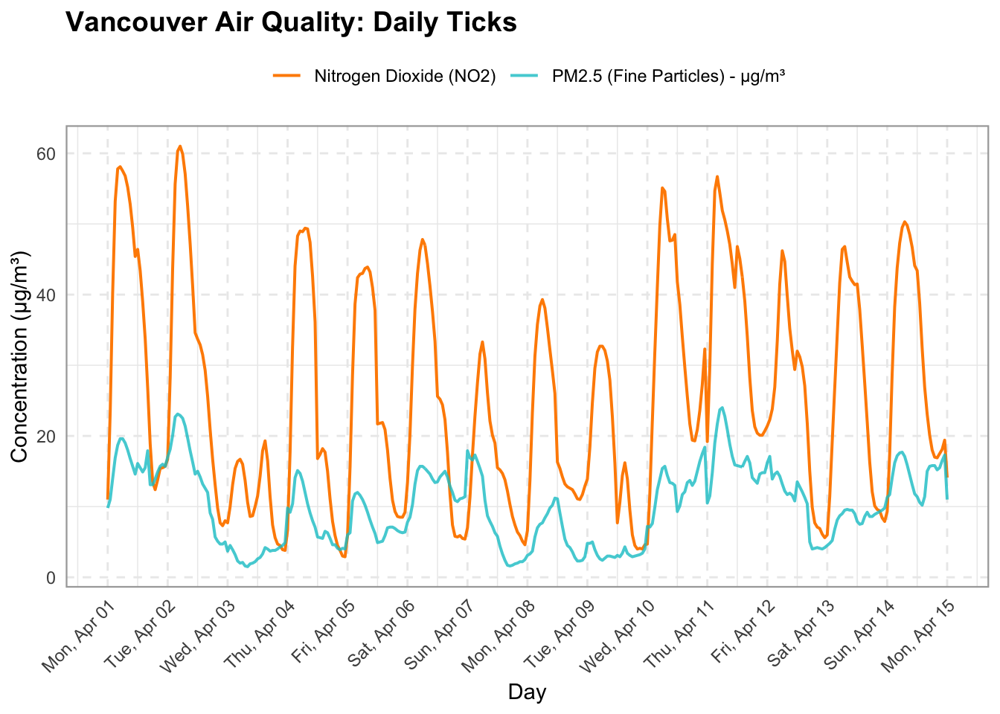
sample_slice = df.loc["2024-04-01":"2024-04-15"]
fig, ax = plt.subplots(figsize=(14, 6))
ax.plot(
sample_slice.index,
sample_slice["nitrogen_dioxide"],
label="Nitrogen Dioxide (NO2)",
color="darkorange",
linewidth=1.2,
)
# Plot PM2.5 on the same timeline
ax.plot(
sample_slice.index,
sample_slice["pm2_5"],
label="PM2.5 (Fine Particles) - μg/m³",
color="teal",
linewidth=1.2,
alpha=0.8,
)
# Format the x-axis to show day name and date (e.g., "Sat, Aug 01")
ax.xaxis.set_major_formatter(mdates.DateFormatter("%a, %b %d"))
ax.xaxis.set_major_locator(
mdates.DayLocator(interval=1)
) # Place a tick every 1 day
plt.xticks(rotation=45)(array([19814., 19815., 19816., 19817., 19818., 19819., 19820., 19821.,
19822., 19823., 19824., 19825., 19826., 19827., 19828., 19829.]), [Text(19814.0, 0, 'Mon, Apr 01'), Text(19815.0, 0, 'Tue, Apr 02'), Text(19816.0, 0, 'Wed, Apr 03'), Text(19817.0, 0, 'Thu, Apr 04'), Text(19818.0, 0, 'Fri, Apr 05'), Text(19819.0, 0, 'Sat, Apr 06'), Text(19820.0, 0, 'Sun, Apr 07'), Text(19821.0, 0, 'Mon, Apr 08'), Text(19822.0, 0, 'Tue, Apr 09'), Text(19823.0, 0, 'Wed, Apr 10'), Text(19824.0, 0, 'Thu, Apr 11'), Text(19825.0, 0, 'Fri, Apr 12'), Text(19826.0, 0, 'Sat, Apr 13'), Text(19827.0, 0, 'Sun, Apr 14'), Text(19828.0, 0, 'Mon, Apr 15'), Text(19829.0, 0, 'Tue, Apr 16')])ax.set_title("Vancouver Air Quality: Daily Ticks", fontsize=14, fontweight="bold")
ax.set_xlabel("Day", fontsize=12, labelpad=10)
ax.set_ylabel("Concentration (μg/m³)", fontsize=12)
ax.legend(loc="upper left")
ax.grid(True, linestyle="--", alpha=0.5)
fig.autofmt_xdate(rotation=45, ha="right")
fig.subplots_adjust(bottom=0.28, left=0.08, right=0.95, top=0.9)
plt.show()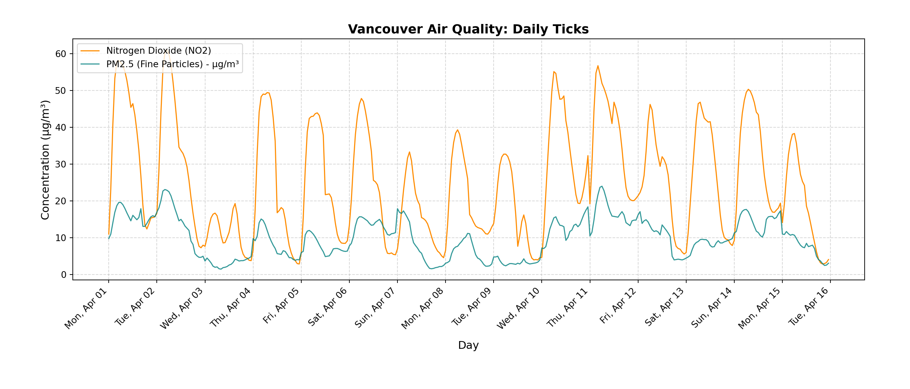
We can see that there are daily spikes in both particulate matter and nitrogen dioxide, but with fairly high variability between days.
Next let’s take a look at a random weekday and weekend to compare the two. We expect to see higher pollutant concentrations on the weekday, as there is likely higher traffic related to work commuting.
# 1. Define two target dates
date_1 <- ymd("2024-04-01") # Weekday (Monday)
date_2 <- ymd("2024-04-07") # Weekend (Sunday)
# 2. Filter data for each date and extract the hour
df_1 <- df |> filter(as_date(time) == date_1) |> mutate(hour = hour(time))
df_2 <- df |> filter(as_date(time) == date_2) |> mutate(hour = hour(time))
# 3. Compute shared Y-axis limits across both days for a uniform scale
combined_data <- bind_rows(df_1, df_2)
max_val <- max(c(combined_data$nitrogen_dioxide, combined_data$pm2_5, combined_data$pm10), na.rm = TRUE)
y_limits <- c(0, max_val * 1.05) # 5% buffer at the top
# --- PLOT 1: Weekday ---
p1 <- ggplot(df_1, aes(x = hour)) +
geom_line(aes(y = nitrogen_dioxide, color = "NO2 (μg/m³)"), linewidth = 1) +
geom_point(aes(y = nitrogen_dioxide, color = "NO2 (μg/m³)"), shape = 16, size = 2) +
geom_line(aes(y = pm2_5, color = "PM2.5 (μg/m³)"), linewidth = 1) +
geom_point(aes(y = pm2_5, color = "PM2.5 (μg/m³)"), shape = 15, size = 2) +
geom_line(aes(y = pm10, color = "PM10 (μg/m³)"), linewidth = 1) +
geom_point(aes(y = pm10, color = "PM10 (μg/m³)"), shape = 15, size = 2) +
scale_color_manual(values = c(
"NO2 (μg/m³)" = "orange",
"PM2.5 (μg/m³)" = "turquoise3",
"PM10 (μg/m³)" = "pink"
)) +
scale_x_continuous(breaks = seq(0, 22, by = 2)) +
scale_y_continuous(limits = y_limits) +
labs(
title = paste("Weekday Pollution (", date_1, ")", sep = ""),
x = "Hour of Day (Local Time)",
y = "Concentration (μg/m³)",
color = NULL
) +
theme_minimal() +
theme(
plot.title = element_text(face = "bold"),
panel.grid.major = element_line(linetype = "dashed"),
panel.border = element_rect(color = "darkgrey", fill = NA, linewidth = 0.8)
)
# --- PLOT 2: Weekend ---
p2 <- ggplot(df_2, aes(x = hour)) +
geom_line(aes(y = nitrogen_dioxide, color = "NO2 (μg/m³)"), linewidth = 1) +
geom_point(aes(y = nitrogen_dioxide, color = "NO2 (μg/m³)"), shape = 16, size = 2) +
geom_line(aes(y = pm2_5, color = "PM2.5 (μg/m³)"), linewidth = 1) +
geom_point(aes(y = pm2_5, color = "PM2.5 (μg/m³)"), shape = 15, size = 2) +
geom_line(aes(y = pm10, color = "PM10 (μg/m³)"), linewidth = 1) +
geom_point(aes(y = pm10, color = "PM10 (μg/m³)"), shape = 15, size = 2) +
scale_color_manual(values = c(
"NO2 (μg/m³)" = "orange",
"PM2.5 (μg/m³)" = "turquoise3",
"PM10 (μg/m³)" = "pink"
)) +
scale_x_continuous(breaks = seq(0, 22, by = 2)) +
scale_y_continuous(limits = y_limits) +
labs(
title = paste("Weekend Pollution (", date_2, ")", sep = ""),
x = "Hour of Day (Local Time)",
y = "Concentration (μg/m³)",
color = NULL
) +
theme_minimal() +
theme(
plot.title = element_text(face = "bold"),
panel.grid.major = element_line(linetype = "dashed"),
panel.border = element_rect(color = "darkgrey", fill = NA, linewidth = 0.8)
)
# --- Combine Side-by-Side with Shared Legend ---
p1 + p2 + plot_layout(guides = "collect") & theme(legend.position = "bottom")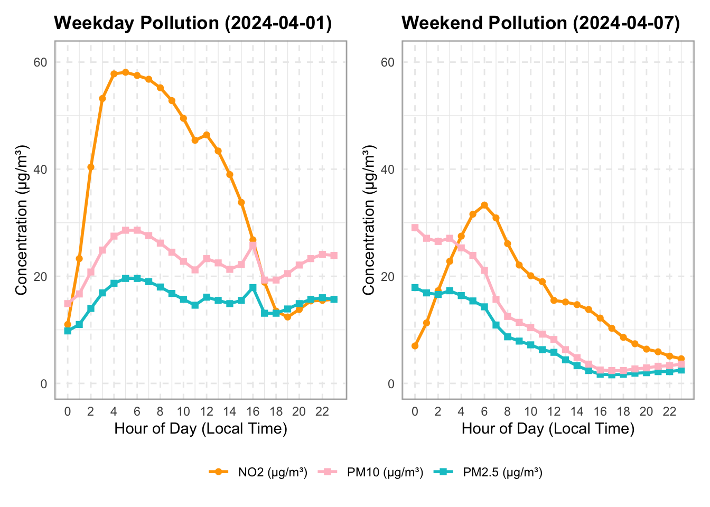
# 1. Define two target dates
date_1 = "2024-04-01" # Weekday
date_2 = "2024-04-07" # Weekend
# 2. Create side-by-side subplots with a shared y-axis
fig, axes = plt.subplots(1, 2, figsize=(14, 5), sharey=True)
# --- PLOT 1: Weekday ---
df_1 = df.loc[date_1]
axes[0].plot(
df_1.index.hour,
df_1["nitrogen_dioxide"],
marker="o",
linewidth=2,
label="NO2 ($\\mu g/m^3$)",
color="orange",
)
axes[0].plot(
df_1.index.hour,
df_1["pm2_5"],
marker="s",
linewidth=2,
label="PM2.5 ($\\mu g/m^3$)",
color="teal",
)
axes[0].plot(
df_1.index.hour,
df_1["pm10"],
marker="s",
linewidth=2,
label="PM10 ($\\mu g/m^3$)",
color="pink",
)
axes[0].set_title(f"Weekday Pollution ({date_1})", fontweight="bold")
axes[0].set_xlabel("Hour of Day (Local Time)")
axes[0].set_ylabel("Concentration ($\\mu g/m^3$)")
axes[0].set_xticks(range(0, 24, 2))
axes[0].grid(True, linestyle="--", alpha=0.6)
axes[0].legend()
# --- PLOT 2: Weekend ---
df_2 = df.loc[date_2]
axes[1].plot(
df_2.index.hour,
df_2["nitrogen_dioxide"],
marker="o",
linewidth=2,
label="NO2 ($\\mu g/m^3$)",
color="orange",
)
axes[1].plot(
df_2.index.hour,
df_2["pm2_5"],
marker="s",
linewidth=2,
label="PM2.5 ($\\mu g/m^3$)",
color="teal",
)
axes[1].plot(
df_2.index.hour,
df_2["pm10"],
marker="s",
linewidth=2,
label="PM10 ($\\mu g/m^3$)",
color="pink",
)
axes[1].set_title(f"Weekend Pollution ({date_2})", fontweight="bold")
axes[1].set_xlabel("Hour of Day (Local Time)")
axes[1].set_xticks(range(0, 24, 2))
axes[1].grid(True, linestyle="--", alpha=0.6)
axes[1].legend()
plt.tight_layout()
plt.show()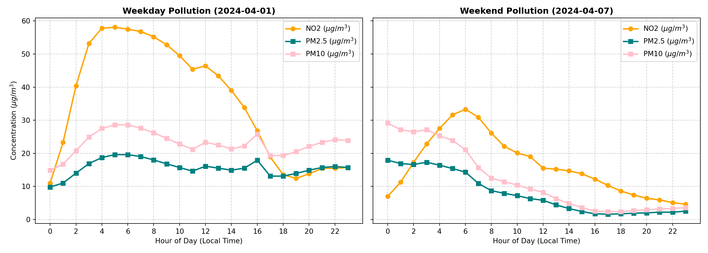
We can see that the weekday concentration of nitrogen dioxide is higher than the weekend. For particulate matter, the concentrations start at about the same level, but drop on the weekend by the end of the day. These plots show only two specific days. Let’s visualize multiple weekdays and weekends to get a sense for the variability day by day.
# 1. Define date range and pollutant
pollutant <- "pm2_5"
pollutant_label <- "PM2.5 (μg/m³)"
# 2. Slice date range (Jan to Apr 2024) and filter out incomplete days (< 18 hours)
valid_days <- df |>
filter(time >= ymd("2024-01-01") & time <= ymd("2024-04-30")) |>
mutate(date = as_date(time), hour = hour(time)) |>
group_by(date) |>
filter(n() >= 18) |>
ungroup()
# Split into weekday and weekend datasets
wkday_df <- valid_days |> filter(!is_weekend)
wknd_df <- valid_days |> filter(is_weekend)
# Calculate hourly means for the overlay lines
wkday_mean <- wkday_df |>
group_by(hour) |>
summarise(mean_val = mean(.data[[pollutant]], na.rm = TRUE))
wknd_mean <- wknd_df |>
group_by(hour) |>
summarise(mean_val = mean(.data[[pollutant]], na.rm = TRUE))
# Compute shared Y-axis limits across all valid data for a uniform scale
y_limits <- c(0, max(valid_days[[pollutant]], na.rm = TRUE) * 1.05)
# --- PLOT 1: Weekday Variability ---
p1 <- ggplot() +
# Background individual daily curves
geom_line(data = wkday_df, aes(x = hour, y = .data[[pollutant]], group = date),
color = "turquoise3", alpha = 0.25, linewidth = 0.8) +
# Bold monthly mean overlay
geom_line(data = wkday_mean, aes(x = hour, y = mean_val, color = "Monthly Mean"),
linewidth = 1.2) +
scale_color_manual(values = c("Monthly Mean" = "black")) +
scale_x_continuous(breaks = seq(0, 22, by = 2)) +
scale_y_continuous(limits = y_limits) +
labs(
title = "PM2.5 Weekday Variability",
x = "Hour of Day (Local Time)",
y = paste("Concentration (", pollutant_label, ")", sep = ""),
color = NULL
) +
theme_minimal() +
theme(
plot.title = element_text(face = "bold", size = 13),
panel.grid.major = element_line(linetype = "dashed"),
legend.position = c(0.82, 0.9),
panel.border = element_rect(color = "darkgrey", fill = NA, linewidth = 0.8)
)
# --- PLOT 2: Weekend Variability ---
p2 <- ggplot() +
# Background individual daily curves (slightly higher alpha as in your script)
geom_line(data = wknd_df, aes(x = hour, y = .data[[pollutant]], group = date),
color = "turquoise3", alpha = 0.35, linewidth = 0.8) +
# Bold monthly mean overlay
geom_line(data = wknd_mean, aes(x = hour, y = mean_val, color = "Monthly Mean"),
linewidth = 1.2) +
scale_color_manual(values = c("Monthly Mean" = "black")) +
scale_x_continuous(breaks = seq(0, 22, by = 2)) +
scale_y_continuous(limits = y_limits) +
labs(
title = "PM2.5 Weekend Variability",
x = "Hour of Day (Local Time)",
y = NULL, # Omit y-axis label since y-axis is shared
color = NULL
) +
theme_minimal() +
theme(
plot.title = element_text(face = "bold", size = 13),
panel.grid.major = element_line(linetype = "dashed"),
legend.position = c(0.82, 0.9),
panel.border = element_rect(color = "darkgrey", fill = NA, linewidth = 0.8)
)
# --- Combine Side-by-Side ---
p1 + p2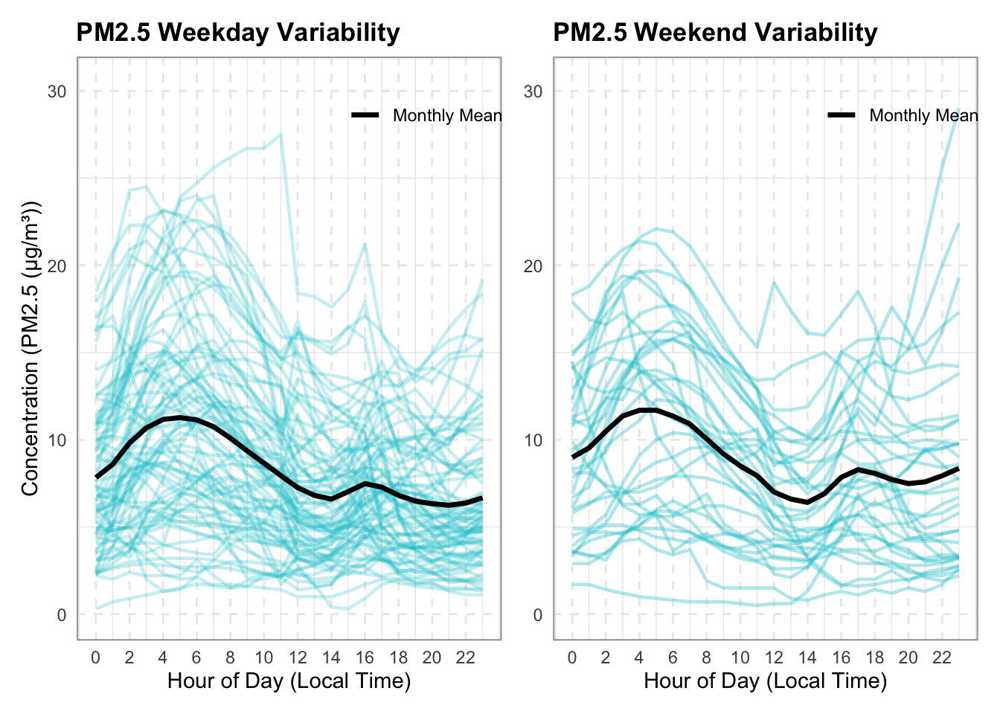
month_df = df.loc["2024-01":"2024-04"]
# 2. Choose the pollutant to inspect
pollutant = "pm2_5"
pollutant_label = "PM2.5 ($\\mu g/m^3$)"
# 3. Create side-by-side subplots with a shared y-axis
fig, axes = plt.subplots(1, 2, figsize=(14, 6), sharey=True)
# Lists to hold daily data for calculating the overall monthly mean later
weekday_groups = []
weekend_groups = []
# 4. Loop through each unique calendar day in the month
for date_val, group in month_df.groupby(month_df.index.date):
if len(group) < 18: # Skip incomplete days if any
continue
hours = group.index.hour
values = group[pollutant].values
is_wknd = group["is_weekend"].iloc[0]
if not is_wknd:
# Plot individual weekday curve with low opacity (alpha)
axes[0].plot(hours, values, color="teal", alpha=0.25, linewidth=1)
weekday_groups.append(group)
else:
# Plot individual weekend curve with low opacity
axes[1].plot(hours, values, color="teal", alpha=0.35, linewidth=1)
weekend_groups.append(group)
# 5. Overlay the bold monthly average line for context
if weekday_groups:
wkday_all = pd.concat(weekday_groups)
wkday_mean = wkday_all.groupby(wkday_all.index.hour)[pollutant].mean()
axes[0].plot(
wkday_mean.index,
wkday_mean.values,
color="black",
linewidth=2.5,
label="Monthly Mean",
)
if weekend_groups:
wknd_all = pd.concat(weekend_groups)
wknd_mean = wknd_all.groupby(wknd_all.index.hour)[pollutant].mean()
axes[1].plot(
wknd_mean.index,
wknd_mean.values,
color="black",
linewidth=2.5,
label="Monthly Mean",
)
# Formatting Subplot 0: Weekdays
axes[0].set_title(
f"PM2.5 Weekday Variability",
fontsize=14,
fontweight="bold",
)
axes[0].set_xlabel("Hour of Day", fontsize=13)
axes[0].set_ylabel(f"Concentration ({pollutant_label})", fontsize=13)
axes[0].set_xticks(range(0, 24, 2))
axes[0].grid(True, linestyle="--", alpha=0.5)
axes[0].legend(loc="upper right")
# Formatting Subplot 1: Weekends
axes[1].set_title(
f"PM2.5 Weekend Variability",
fontsize=13,
fontweight="bold",
)
axes[1].set_xlabel("Hour of Day (Local Time)", fontsize=11)
axes[1].set_xticks(range(0, 24, 2))
axes[1].grid(True, linestyle="--", alpha=0.5)
axes[1].legend(loc="upper right")
plt.tight_layout()
plt.show()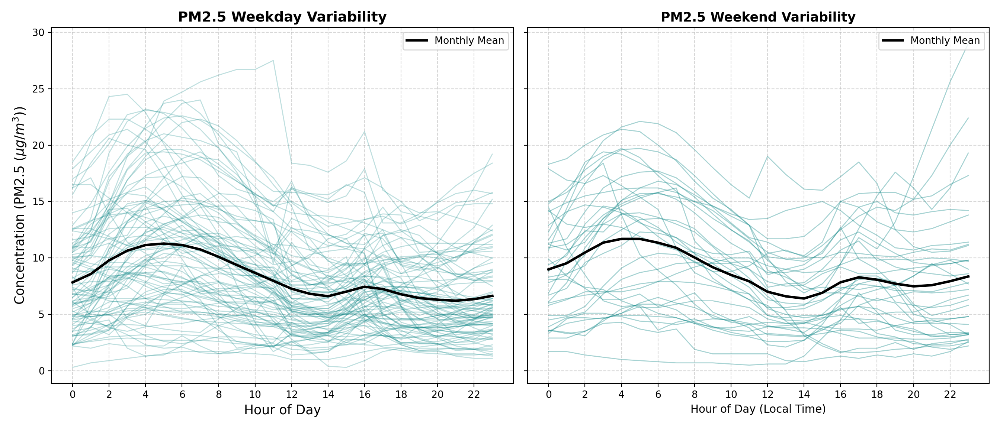
We can see that there is high variability day by day, and in fact the monthly mean for weekends is comparable to or even higher than that of weekdays in some hours. Due to the complexity of this data, simple temporal models may struggle to accurately predict pollution levels.
4. Modelling
Now we’d like to see how well we can model this cyclicity and make predictions for Vancouver air pollution. We will begin with a few simple models to use as our baseline.
Baseline Models
We need to split our data into a training and a test set for validation. We will use one year for training, and two months for testing. We will use PM2.5 as our target variable to predict, although this analysis could be performed on any of our pollutants in a similar manner. These initial models are univariate, meaning that they rely solely on the past values of the target variable’s values, and don’t incorporate any explanatory variables. Therefore, we also need to isolate our target column.
# Slice the baseline period
baseline_slice <- df |>
filter(time >= "2024-03-01" & time <= "2025-05-31")
cutoff_date <- as.Date("2025-03-01")
# Split into train and test
train_df <- baseline_slice |> filter(time < cutoff_date)
test_df <- baseline_slice |> filter(time >= cutoff_date)
cat("Training set:", nrow(train_df), "rows\n")Training set: 8752 rowscat("Testing set:", nrow(test_df), "rows\n")Testing set: 2192 rows# Define target column
target_col <- "pm2_5"
# Extract target vectors
y_train <- train_df[[target_col]]
y_test <- test_df[[target_col]]
forecast_idx <- test_df$timebaseline_slice = df.loc["2024-03-01":"2025-05-31"]
cutoff_date = "2025-03-01"
train_df = baseline_slice.loc[baseline_slice.index < cutoff_date]
test_df = baseline_slice.loc[baseline_slice.index >= cutoff_date]
print(f"Training set: {train_df.shape[0]} rows")Training set: 8760 rowsprint(f"Testing set: {test_df.shape[0]} rows")Testing set: 2208 rows
# Define target and feature columns
target_col = "pm2_5"
# Get train and test for target column
y_train = train_df[target_col]
y_test = test_df[target_col]
forecast_idx = y_test.indexWe will begin with the following simple baseline models:
- Average forecast: predicts the average value of the whole training set
- Naive forecast: predicts the very last value of the training set.
- Seasonally adjusted forecast: first we perform seasonal decomposition on our training set and subtract the seasonal component, leaving us with the trend and residual series. This model then predicts the very last value of that seasonally adjusted training set.
All three of these baseline models will create flat lines, so we group them together for simplicity.
# 1. Compute Forecasts
# Average forecast
avg_forecast <- data.frame(
time = forecast_idx,
y = mean(y_train, na.rm = TRUE),
Label = "Average"
)
# Naive forecast (using the last value of y_train)
naive_forecast <- data.frame(
time = forecast_idx,
y = tail(y_train, 1),
Label = "Naive"
)
# Seasonally-adjusted forecast (period = 24 for hourly daily seasonality)
ts_train <- ts(y_train, frequency = 24)
decomposition <- decompose(ts_train, type = "additive")
# Seasonally adjusted series (subtracting the seasonal component)
seasonally_adjusted_train <- y_train - decomposition$seasonal
last_trend_value <- tail(seasonally_adjusted_train, 1)
seasonally_adjusted_forecast <- data.frame(
time = forecast_idx,
y = as.numeric(last_trend_value), # Ensure it's a clean scalar for recycling
Label = "Seasonally Adjusted"
)
# Combine all baselines into one data frame
all_baselines <- bind_rows(avg_forecast, naive_forecast, seasonally_adjusted_forecast)
# 2. Define display windows and slice subsets
train_history_hours <- 24
test_forecast_hours <- 168
# Slice history and future test subsets for visualization
train_history_df <- train_df |>
tail(train_history_hours) |>
select(time, y = !!sym(target_col)) |>
mutate(Series = "Training History")
true_test_subset <- test_df |>
head(test_forecast_hours) |>
select(time, y = !!sym(target_col)) |>
mutate(Series = "True Test Values")
forecast_subset_index <- true_test_subset$time
transition_time <- forecast_subset_index[1]
# Filter baselines to match the exact forecast subset index window
plot_baselines <- all_baselines |>
filter(time %in% forecast_subset_index) |>
mutate(Series = Label)
# 3. Plotting with explicit legend ordering
ggplot() +
# Plot Training History
geom_line(
data = train_history_df,
aes(x = time, y = y, color = Series),
linewidth = 1,
alpha = 0.6
) +
# Plot True Test Values (Zoomed subset)
geom_line(
data = true_test_subset,
aes(x = time, y = y, color = Series),
linewidth = 1.2,
alpha = 0.9
) +
# Plot Baseline Forecasts restricted to the subset window
geom_line(
data = plot_baselines,
aes(x = time, y = y, color = Label, linetype = Label),
linewidth = 1,
alpha = 0.8
) +
# Vertical transition line
geom_vline(
xintercept = transition_time,
color = "red",
linetype = "dotted",
linewidth = 0.8,
alpha = 0.6
) +
# Custom colors with explicit breaks order
scale_color_manual(
name = NULL,
breaks = c("Training History", "True Test Values", "Average", "Naive", "Seasonally Adjusted"),
values = c(
"Training History" = "gray",
"True Test Values" = "#222222",
"Average" = "darkgreen",
"Naive" = "blue",
"Seasonally Adjusted" = "darkorange"
)
) +
scale_linetype_manual(
name = NULL,
values = c(
"Average" = "dashed",
"Naive" = "dotted",
"Seasonally Adjusted" = "dashed"
),
guide = "none"
) +
labs(
title = expression(bold(paste(PM[2.5], " Baseline Models: Training History & Test Forecast"))),
x = "Time",
y = expression(paste(PM[2.5], " (", mu, "g/m"^3, ")"))
) +
theme_minimal(base_size = 12) +
theme(
plot.title = element_text(size = 12),
legend.position = "bottom",
legend.box = "horizontal",
legend.margin = margin(t = 0, r = 0, b = 0, l = 0),
legend.background = element_rect(fill = "white", color = NA),
panel.grid.minor = element_blank(),
panel.border = element_rect(color = "darkgrey", fill = NA, linewidth = 0.8)
) +
guides(color = guide_legend(nrow = 2, override.aes = list(linetype = c("solid", "solid", "dashed", "dotted", "dashed"))))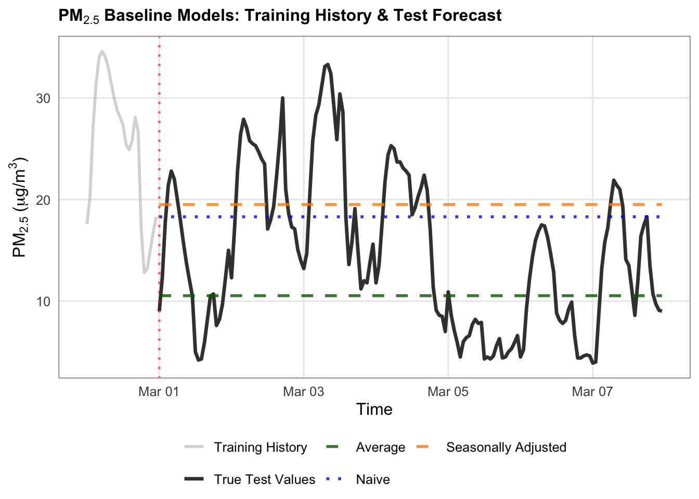
# Average forecast
avg_forecast = pd.DataFrame({"y": y_train.mean(), "Label": "Average"}, index=forecast_idx)
# Naive forecast
naive_forecast = pd.DataFrame({"y": y_train.iloc[-1], "Label": "Naive"}, index=forecast_idx)
# Seasonally-adjusted forecast
# Perform seasonal decomposition on the training set (period=24 for hourly daily seasonality)
decomposition = seasonal_decompose(
y_train, model="additive", period=24
)
# Compute the seasonally adjusted series (e.g., subtracting the seasonal component for additive model)
seasonally_adjusted_train = y_train - decomposition.seasonal
# Take the trend value of the very last observation in the training set
last_trend_value = seasonally_adjusted_train.iloc[-1]
# Create the seasonally adjusted forecast DataFrame across the forecast_index
seasonally_adjusted_forecast = pd.DataFrame(
{"y": last_trend_value, "Label": "Seasonally Adjusted"},
index=forecast_idx,
)
# Plotting
# 1. Combine baselines into one collection
all_baselines = pd.concat([
avg_forecast,
naive_forecast,
seasonally_adjusted_forecast,
])
# 2. Define your display windows
train_history_hours = 24
test_forecast_hours = 168
# Slice history and future test subsets
train_history = y_train.tail(train_history_hours)
true_test_subset = y_test.head(test_forecast_hours)
forecast_subset_index = true_test_subset.index
# 3. Set up the plot canvas
fig, ax = plt.subplots(figsize=(14, 5.5), dpi=100)
# Plot Historical Training Data (solid dark gray to differentiate from test)
ax.plot(
train_history.index,
train_history.values,
label="Training History (${PM}_{2.5}$)",
color="gray",
linewidth=1.2,
alpha=0.6,
)
# Plot True Test Values (solid black)
ax.plot(
true_test_subset.index,
true_test_subset.values,
label="True Test Values",
color="#222222",
linewidth=2,
alpha=0.8,
zorder=5,
)
# Define styles for each baseline model
styles = {
"Average": {
"color": "darkgreen",
"linestyle": "--",
"alpha": 0.7,
"lw": 1.5},
"Naive": {
"color": "blue",
"linestyle": ":",
"linewidth": 3,
"marker": "o",
"markevery": 24,
"alpha": 1,
},
"Seasonally Adjusted": {
"color": "darkorange",
"linestyle": "--",
"linewidth": 1.5,
"alpha": 0.9,
},
}
# Loop through each model label and plot its forecast slice over the test index
for label, style in styles.items():
# Filter by label first, then reset/assign the index to match the test subset
model_df = all_baselines[all_baselines["Label"] == label].copy()
model_df.index = forecast_idx # ensure exact alignment
subset_vals = model_df.loc[forecast_subset_index, "y"]
ax.plot(
forecast_subset_index,
subset_vals,
label=label,
color=style["color"],
linestyle=style.get("linestyle", "-"),
linewidth=style.get("linewidth", 1.2),
alpha=style.get("alpha", 1.0),
)
# Add a vertical dashed line to visually separate training history from forecast execution
transition_time = true_test_subset.index[0]
ax.axvline(
x=transition_time,
color="red",
linestyle=":",
alpha=0.6,
label="Forecast Start",
)
# 4. Formatting the layout
ax.set_title(
"PM₂.₅ Baseline Models: Training History & Test Forecast",
fontsize=16,
fontweight="bold",
)
ax.set_xlabel("Time", fontsize=16)
ax.set_ylabel(r"$\text{PM}_{2.5}$ ($\mu\text{g/m}^3$)", fontsize=16)
ax.tick_params(axis='x', labelsize=14)
ax.tick_params(axis='y', labelsize=14)
ax.grid(True, linestyle=":", alpha=0.6, color="darkgrey")
ax.legend(
loc="upper left",
frameon=True,
facecolor="white",
framealpha=0.95,
edgecolor="lightgrey",
fontsize=14,
)
fig.autofmt_xdate(rotation=45, ha="right")
fig.subplots_adjust(bottom=0.28, left=0.12, right=0.95, top=0.90)
plt.show()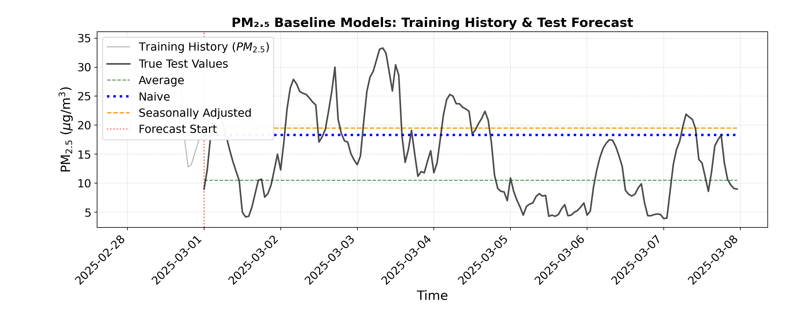
We can see that these three baseline models predict horizontal lines, which are not accurate reflections of the true test values.
There are two more baseline models to try:
- Seasonal naive forecast: We take the last 24 hours of our training data, and predict it to repeat across the forecast index.
- Drift forecast: We calculate the slope between the first and last value of the training set, and predict a linear trend with that slope across the forecast index.
# 1. Compute Seasonal Naive and Drift Forecasts
# Seasonal Naive: Map the last 24 hours of training data to repeat based on hour of day
last_season_values <- tail(y_train, 24)
# Extract hour (0-23) for each forecast index and index into the last 24 values (R is 1-indexed, so add 1 to hour)
seasonal_naive_values <- last_season_values[(hour(forecast_idx) %% 24) + 1]
seasonal_naive <- data.frame(
time = forecast_idx,
y = as.numeric(seasonal_naive_values),
Label = "Seasonal Naive"
)
# Drift Forecast
last_val <- tail(y_train, 1)
first_val <- head(y_train, 1)
n_train <- length(y_train)
# Calculate average change per step in the training set
slope <- (last_val - first_val) / (n_train - 1)
# Generate drift values growing linearly across the forecast index steps (1 to length)
steps <- seq_along(forecast_idx)
drift_values <- last_val + (slope * steps)
drift_forecast <- data.frame(
time = forecast_idx,
y = as.numeric(drift_values),
Label = "Drift"
)
# Combine baselines into one collection
all_baselines <- bind_rows(seasonal_naive, drift_forecast)
# 2. Define display windows and slice subsets
train_history_hours <- 24
test_forecast_hours <- 168
# Slice history and future test subsets for visualization
train_history_df <- train_df |>
tail(train_history_hours) |>
select(time, y = !!sym(target_col)) |>
mutate(Series = "Training History")
true_test_subset <- test_df |>
head(test_forecast_hours) |>
select(time, y = !!sym(target_col)) |>
mutate(Series = "True Test Values")
forecast_subset_index <- true_test_subset$time
transition_time <- forecast_subset_index[1]
# Filter baselines to match the exact forecast subset index window
plot_baselines <- all_baselines |>
filter(time %in% forecast_subset_index)
# 3. Plotting with ggplot2
ggplot() +
# Plot Training History
geom_line(
data = train_history_df,
aes(x = time, y = y, color = Series, linetype = Series),
linewidth = 1,
alpha = 0.6
) +
# Plot True Test Values (Zoomed subset)
geom_line(
data = true_test_subset,
aes(x = time, y = y, color = Series, linetype = Series),
linewidth = 1.2,
alpha = 0.9
) +
# Plot Baseline Forecasts restricted to the subset window
geom_line(
data = plot_baselines,
aes(x = time, y = y, color = Label, linetype = Label),
linewidth = 1,
alpha = 0.8
) +
# Vertical transition line
geom_vline(
xintercept = transition_time,
color = "red",
linetype = "dotted",
linewidth = 0.8,
alpha = 0.6
) +
# Custom colors mapping (using turquoise3 as requested)
scale_color_manual(
name = NULL,
breaks = c("Training History", "True Test Values", "Seasonal Naive", "Drift"),
values = c(
"Training History" = "gray",
"True Test Values" = "#222222",
"Seasonal Naive" = "turquoise3",
"Drift" = "hotpink3"
)
) +
scale_linetype_manual(
name = NULL,
values = c(
"Training History" = "solid",
"True Test Values" = "solid",
"Seasonal Naive" = "solid",
"Drift" = "dotdash"
),
guide = "none"
) +
labs(
title = expression(bold(paste(PM[2.5], " Baseline Models: Training History & Test Forecast"))),
x = "Time",
y = expression(paste(PM[2.5], " (", mu, "g/m"^3, ")"))
) +
theme_minimal(base_size = 12) +
theme(
plot.title = element_text(face = "bold", size = 12),
legend.position = "bottom",
legend.box = "horizontal",
legend.margin = margin(t = 0, r = 0, b = 0, l = 0),
legend.background = element_rect(fill = "white", color = NA),
panel.grid.minor = element_blank(),
panel.border = element_rect(color = "darkgrey", fill = NA, linewidth = 0.8)
) +
guides(color = guide_legend(nrow = 2, override.aes = list(linetype = c("solid", "solid", "solid", "dotdash"))))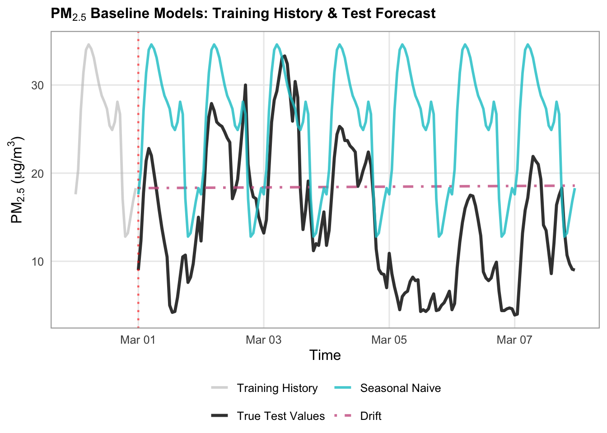
# Seasonal naive forecast
# Map the last 24 hours of training data to repeat across the forecast index
last_season_values = y_train.tail(24).values
# Repeat or align based on hour of day matching
seasonal_naive_values = [
last_season_values[ts.hour] for ts in forecast_idx
]
seasonal_naive = pd.DataFrame(
{"y": seasonal_naive_values, "Label": "Seasonal Naive"},
index=forecast_idx,
)
# Drift
last_val = y_train.iloc[-1]
first_val = y_train.iloc[0]
n_train = len(y_train)
# Calculate average change per step in the training set
slope = (last_val - first_val) / (n_train - 1)
# Generate drift values growing linearly across the forecast index steps
steps = np.arange(1, len(forecast_idx) + 1)
drift_values = last_val + (slope * steps)
drift_forecast = pd.DataFrame(
{"y": drift_values, "Label": "Drift"}, index=forecast_idx
)
# Plotting
# 1. Combine baselines into one collection
all_baselines = pd.concat([
seasonal_naive,
drift_forecast
])
# 2. Define your display windows
train_history_hours = 24
test_forecast_hours = 168
# Slice history and future test subsets
train_history = y_train.tail(train_history_hours)
true_test_subset = y_test.head(test_forecast_hours)
forecast_subset_index = true_test_subset.index
# 3. Set up the plot canvas
fig, ax = plt.subplots(figsize=(14, 5.5), dpi=100)
# Plot Historical Training Data (solid dark gray to differentiate from test)
ax.plot(
train_history.index,
train_history.values,
label="Training History (${PM}_{2.5}$)",
color="gray",
linewidth=1.2,
alpha=0.6,
)
# Plot True Test Values (solid black)
ax.plot(
true_test_subset.index,
true_test_subset.values,
label="True Test Values",
color="#222222",
linewidth=2,
alpha=0.8,
zorder=5,
)
# Define styles for each baseline model
styles = {
"Seasonal Naive": {
"color": "teal",
"linestyle": "-",
"linewidth": 1.5,
"alpha": 0.7,
},
"Drift": {
"color": "pink",
"linestyle": "-.",
"linewidth": 2,
"alpha": 0.9,
},
}
# Loop through each model label and plot its forecast slice over the test index
for label, style in styles.items():
# Filter by label first, then reset/assign the index to match the test subset
model_df = all_baselines[all_baselines["Label"] == label].copy()
model_df.index = forecast_idx # ensure exact alignment
subset_vals = model_df.loc[forecast_subset_index, "y"]
ax.plot(
forecast_subset_index,
subset_vals,
label=label,
color=style["color"],
linestyle=style.get("linestyle", "-"),
linewidth=style.get("linewidth", 1.2),
alpha=style.get("alpha", 1.0),
)
# Add a vertical dashed line to visually separate training history from forecast execution
transition_time = true_test_subset.index[0]
ax.axvline(
x=transition_time,
color="red",
linestyle=":",
alpha=0.6,
label="Forecast Start",
)
# 4. Formatting the layout
ax.set_title(
"PM₂.₅ Baseline Models: Training History & Test Forecast",
fontsize=16,
fontweight="bold",
)
ax.set_xlabel("Time", fontsize=16)
ax.set_ylabel(r"$\text{PM}_{2.5}$ ($\mu\text{g/m}^3$)", fontsize=16)
ax.tick_params(axis='x', labelsize=14)
ax.tick_params(axis='y', labelsize=14)
ax.grid(True, linestyle=":", alpha=0.6, color="darkgrey")
ax.legend(
loc="upper left",
frameon=True,
facecolor="white",
framealpha=0.95,
edgecolor="lightgrey",
fontsize=14,
)
fig.autofmt_xdate(rotation=45, ha="right")
fig.subplots_adjust(bottom=0.28, left=0.12, right=0.95, top=0.90)
plt.show()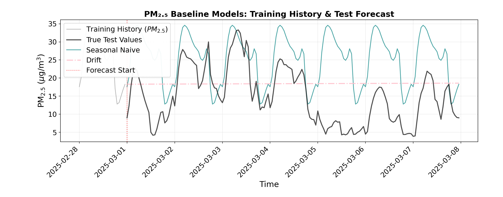
Our drift forecast has a very slight increasing slope to it, which indicates that there is a slight increase between our first and last values from our training set. The seasonal naive forecast shows the previous 24 hours repeated over time, which has some similarities to the true test values, but still is not very accurate.
Beyond just visual evaluation, we can also evaluate our predictions numerically using root mean squared error (RMSE) and mean absolute error (MAE).
# 1. Collect all baseline DataFrames into one collection
all_baselines <- bind_rows(
avg_forecast,
naive_forecast,
seasonally_adjusted_forecast,
seasonal_naive,
drift_forecast
)
# 2. Evaluate model performance across unique labels
evaluation_results <- list()
for (lbl in unique(all_baselines$Label)) {
# Filter by model label and align predictions with y_test based on timestamp
model_df <- all_baselines |> filter(Label == lbl)
# Align predictions with y_test index (using time matching)
aligned_preds <- model_df$y[match(forecast_idx, model_df$time)]
# Calculate RMSE and MAE (ignoring any potential NAs)
residuals <- y_test - aligned_preds
rmse <- sqrt(mean(residuals^2, na.rm = TRUE))
mae <- mean(abs(residuals), na.rm = TRUE)
evaluation_results[[lbl]] <- data.frame(
Model = lbl,
RMSE = rmse,
MAE = mae
)
}
# 3. Combine into a final performance results data frame
results_df <- bind_rows(evaluation_results) |>
mutate(
RMSE = round(RMSE, 2),
MAE = round(MAE, 2)
)
cat("\n--- Baseline Model Performance Evaluation ---\n")
--- Baseline Model Performance Evaluation ---print(results_df, row.names = FALSE) Model RMSE MAE
Average 8.49 6.53
Naive 9.79 8.40
Seasonally Adjusted 10.50 9.08
Seasonal Naive 14.95 13.03
Drift 10.90 9.49# Collect all baseline DataFrames
all_baselines = pd.concat([
avg_forecast,
naive_forecast,
seasonally_adjusted_forecast,
seasonal_naive,
drift_forecast
])
evaluation_results = []
# Loop through unique labels present in the combined dataframe
for label in all_baselines["Label"].unique():
# Filter by model label and align with true test values (y_test)
model_df = all_baselines[all_baselines["Label"] == label]
aligned_preds = model_df.loc[y_test.index, "y"]
# Calculate metrics
rmse = np.sqrt(mean_squared_error(y_test, aligned_preds))
mae = mean_absolute_error(y_test, aligned_preds)
evaluation_results.append({
"Model": label,
"RMSE": rmse,
"MAE": mae
})
# Convert results into a performance table
results_df = pd.DataFrame(evaluation_results).reset_index(drop=True)
print("\n--- Baseline Model Performance Evaluation ---")
--- Baseline Model Performance Evaluation ---print(results_df.to_string(index=False, formatters={"RMSE": "{:.2f}".format, "MAE": "{:.2f}".format})) Model RMSE MAE
Average 8.48 6.52
Naive 9.77 8.38
Seasonally Adjusted 10.48 9.05
Seasonal Naive 14.92 13.00
Drift 10.94 9.53With both of these metrics, lower error is better. We can see that the average forecast has the lowest in both metrics, but all models are fairly similar, and not performing very well. Let’s try some more advanced models and see if they perform better.
ARIMA/SARIMA Models
ARIMA (Autoregressive Integrated Moving Average) and SARIMA (Seasonal ARIMA) forecast future values using only the target variable’s historical patterns.
- ARIMA combines three core mechanics: Autoregression (AR) for short-term persistence, Integration (I) via differencing to stabilize long-term trends, and Moving Average (MA) to incorporate recent forecast errors for self-correction.
- SARIMA extends this framework by adding dedicated seasonal components to capture repeating daily or weekly rhythms.
Because fitting ARIMA on large, multi-month hourly datasets can be computationally intensive, we train our models on the final month of the training set for efficiency.
We begin with a standard \(\text{ARIMA}(1, 1, 1)\) baseline. The parameters \((p, d, q)\) represent:
- \(p = 1\) (AR): Looks at the immediate past hour to project next steps.
- \(d = 1\) (I): Applies one round of differencing to remove long-term trends and stabilize the series.
- \(q = 1\) (MA): Factors in one past forecast error to self-correction after sudden spikes or dips.
# Get train subset
train_subset_vals <- tail(y_train, 28 * 24)
# Fit the model
arima_model <- arima(train_subset_vals, order = c(1, 1, 1))
# Forecast over a test slice of y_test (first week / 168 steps)
steps_to_forecast <- length(head(y_test, 168))
forecast_obj <- predict(arima_model, n.ahead = steps_to_forecast)
arima_preds <- forecast_obj$pred
# Align index with the first 168 steps of test data
forecast_subset_test <- head(test_df, steps_to_forecast)
arima_preds_time <- forecast_subset_test$time
arima_preds_vals <- as.numeric(arima_preds)
# Calculate evaluation metrics
actuals <- head(y_test, steps_to_forecast)
residuals <- actuals - arima_preds_vals
arima_rmse <- sqrt(mean(residuals^2, na.rm = TRUE))
arima_mae <- mean(abs(residuals), na.rm = TRUE)
cat(sprintf("ARIMA(1,1,1) (1-week test) -> RMSE: %.2f, MAE: %.2f\n", arima_rmse, arima_mae))ARIMA(1,1,1) (1-week test) -> RMSE: 8.96, MAE: 7.65train_subset = y_train.tail(28 * 24).asfreq("h")
arima_model = ARIMA(train_subset, order=(1, 1, 1)).fit()
# Forecast over a test slice of y_test
steps_to_forecast = len(y_test.head(168)) # Forecasting first week of test
arima_preds = arima_model.forecast(steps=steps_to_forecast)
arima_preds.index = y_test.head(steps_to_forecast).index
arima_rmse = np.sqrt(
mean_squared_error(y_test.head(steps_to_forecast), arima_preds)
)
arima_mae = mean_absolute_error(y_test.head(steps_to_forecast), arima_preds)
print(f"ARIMA(1,1,1) (1-week test) -> RMSE: {arima_rmse:.2f},"
f" MAE: {arima_mae:.2f}")ARIMA(1,1,1) (1-week test) -> RMSE: 8.96, MAE: 7.65We can see that the errors are about on par with those of our best baseline models, indicating that we haven’t made much improvement. Let’s next try a SARIMA model, incorporating seasonality into our predictions. We again will use a standard SARIMA(1,1,1)x(1,1,1,24), where the order for all components is 1. The first parentheses represent the non-seasonal part (the same as the ARIMA model), while the second represent the seasonal part, using a 24 hour cycle.
steps_to_forecast <- length(head(y_test, 168))
# Fit SARIMA with daily seasonality (s=24) using base R arima()
# order = c(p, d, q), seasonal = list(order = c(P, D, Q), period = s)
sarima_model <- arima(
train_subset_vals,
order = c(1, 1, 1),
seasonal = list(order = c(1, 1, 1), period = 24)
)
# Generate forecasts
forecast_obj <- predict(sarima_model, n.ahead = steps_to_forecast)
sarima_preds <- forecast_obj$pred
# Align predictions and evaluate performance
forecast_subset_test <- head(test_df, steps_to_forecast)
sarima_preds_vals <- as.numeric(sarima_preds)
actuals <- head(y_test, steps_to_forecast)
residuals <- actuals - sarima_preds_vals
sarima_rmse <- sqrt(mean(residuals^2, na.rm = TRUE))
sarima_mae <- mean(abs(residuals), na.rm = TRUE)
cat(sprintf("SARIMA(1,1,1)x(1,1,1,24) (1-week test) -> RMSE: %.2f, MAE: %.2f\n", sarima_rmse, sarima_mae))SARIMA(1,1,1)x(1,1,1,24) (1-week test) -> RMSE: 14.34, MAE: 12.32# Fit SARIMA with daily seasonality (s=24)
# order = (p, d, q) -> non-seasonal components
# seasonal_order = (P, D, Q, s) -> seasonal components with period s=24 hours
sarima_model = SARIMAX(
train_subset,
order=(1, 1, 1),
seasonal_order=(1, 1, 1, 24),
enforce_stationarity=False,
enforce_invertibility=False,
)
sarima_fitted = sarima_model.fit(disp=False)
# Forecast over the same 1-week test slice
steps_to_forecast = len(y_test.head(168))
sarima_preds = sarima_fitted.forecast(steps=steps_to_forecast)
sarima_preds.index = y_test.head(steps_to_forecast).index
# Evaluate SARIMA Performance
sarima_rmse = np.sqrt(
mean_squared_error(y_test.head(steps_to_forecast), sarima_preds)
)
sarima_mae = mean_absolute_error(y_test.head(steps_to_forecast), sarima_preds)
print(
f"SARIMA(1,1,1)x(1,1,1,24) (1-week test) -> RMSE: {sarima_rmse:.2f},"
f" MAE: {sarima_mae:.2f}"
)SARIMA(1,1,1)x(1,1,1,24) (1-week test) -> RMSE: 17.13, MAE: 14.77We can see that the errors are much higher, indicating that this added complexity did not help improve our predictions.
Let’s also try an Auto-ARIMA model, where we allow the model to select the orders for our components by which model performs best on the training data.
# Fit Auto-ARIMA with daily seasonality (m=24)
# auto.arima handles seasonal search when seasonal = TRUE and frequency = 24
# First convert train_subset_vals into a ts object with frequency 24
train_ts <- ts(train_subset_vals, frequency = 24)
auto_model <- auto.arima(
train_ts,
seasonal = TRUE,
d = NA, # Let it automatically select differencing order
max.p = 3,
max.q = 3,
max.P = 2,
max.Q = 2,
trace = TRUE,
stepwise = TRUE
)
Fitting models using approximations to speed things up...
ARIMA(2,1,2)(1,0,1)[24] with drift : Inf
ARIMA(0,1,0) with drift : 2678.378
ARIMA(1,1,0)(1,0,0)[24] with drift : 2396.279
ARIMA(0,1,1)(0,0,1)[24] with drift : 2412.053
ARIMA(0,1,0) : 2676.438
ARIMA(1,1,0) with drift : 2446.252
ARIMA(1,1,0)(2,0,0)[24] with drift : 2382.58
ARIMA(1,1,0)(2,0,1)[24] with drift : Inf
ARIMA(1,1,0)(1,0,1)[24] with drift : Inf
ARIMA(0,1,0)(2,0,0)[24] with drift : 2532.257
ARIMA(2,1,0)(2,0,0)[24] with drift : 2378.6
ARIMA(2,1,0)(1,0,0)[24] with drift : 2392.322
ARIMA(2,1,0)(2,0,1)[24] with drift : Inf
ARIMA(2,1,0)(1,0,1)[24] with drift : Inf
ARIMA(3,1,0)(2,0,0)[24] with drift : 2380.794
ARIMA(2,1,1)(2,0,0)[24] with drift : 2365.679
ARIMA(2,1,1)(1,0,0)[24] with drift : Inf
ARIMA(2,1,1)(2,0,1)[24] with drift : Inf
ARIMA(2,1,1)(1,0,1)[24] with drift : Inf
ARIMA(1,1,1)(2,0,0)[24] with drift : 2378.9
ARIMA(3,1,1)(2,0,0)[24] with drift : 2366.022
ARIMA(2,1,2)(2,0,0)[24] with drift : 2381.851
ARIMA(1,1,2)(2,0,0)[24] with drift : 2379.89
ARIMA(3,1,2)(2,0,0)[24] with drift : 2382.849
ARIMA(2,1,1)(2,0,0)[24] : 2363.757
ARIMA(2,1,1)(1,0,0)[24] : Inf
ARIMA(2,1,1)(2,0,1)[24] : Inf
ARIMA(2,1,1)(1,0,1)[24] : Inf
ARIMA(1,1,1)(2,0,0)[24] : 2376.895
ARIMA(2,1,0)(2,0,0)[24] : 2376.587
ARIMA(3,1,1)(2,0,0)[24] : 2365.003
ARIMA(2,1,2)(2,0,0)[24] : 2379.829
ARIMA(1,1,0)(2,0,0)[24] : 2380.574
ARIMA(1,1,2)(2,0,0)[24] : 2377.888
ARIMA(3,1,0)(2,0,0)[24] : 2378.783
ARIMA(3,1,2)(2,0,0)[24] : 2380.833
Now re-fitting the best model(s) without approximations...
ARIMA(2,1,1)(2,0,0)[24] : Inf
ARIMA(3,1,1)(2,0,0)[24] : Inf
ARIMA(2,1,1)(2,0,0)[24] with drift : Inf
ARIMA(3,1,1)(2,0,0)[24] with drift : Inf
ARIMA(2,1,0)(2,0,0)[24] : 2368.78
Best model: ARIMA(2,1,0)(2,0,0)[24] cat("\nBest Model Found:", arimaorder(auto_model), "\n")
Best Model Found: 2 1 0 2 0 0 24 # Forecast over the test slice (1-week / 168 steps)
steps_to_forecast <- length(head(y_test, 168))
forecast_obj <- forecast(auto_model, h = steps_to_forecast)
auto_preds <- forecast_obj$mean
# Evaluate Auto-ARIMA Performance
forecast_subset_test <- head(test_df, steps_to_forecast)
auto_preds_vals <- as.numeric(auto_preds)
actuals <- head(y_test, steps_to_forecast)
residuals <- actuals - auto_preds_vals
auto_rmse <- sqrt(mean(residuals^2, na.rm = TRUE))
auto_mae <- mean(abs(residuals), na.rm = TRUE)
cat(sprintf("Auto-SARIMA (1-week test) -> RMSE: %.2f, MAE: %.2f\n", auto_rmse, auto_mae))Auto-SARIMA (1-week test) -> RMSE: 11.95, MAE: 10.17# Fit Auto-ARIMA with daily seasonality (m=24)
# Setting stepwise=True speeds up the search considerably
auto_model = auto_arima(
train_subset,
seasonal=True,
m=24, # Hourly daily cycle
d=None, # Let it automatically test/determine differencing order
max_p=3,
max_q=3,
max_P=2,
max_Q=2,
trace=True,
error_action="ignore",
suppress_warnings=True,
stepwise=True,
)Performing stepwise search to minimize aic
ARIMA(2,1,2)(1,0,1)[24] intercept : AIC=2331.297, Time=1.20 sec
ARIMA(0,1,0)(0,0,0)[24] intercept : AIC=2679.510, Time=0.01 sec
ARIMA(1,1,0)(1,0,0)[24] intercept : AIC=2387.741, Time=0.21 sec
ARIMA(0,1,1)(0,0,1)[24] intercept : AIC=2413.912, Time=0.31 sec
ARIMA(0,1,0)(0,0,0)[24] : AIC=2677.581, Time=0.01 sec
ARIMA(2,1,2)(0,0,1)[24] intercept : AIC=inf, Time=2.29 sec
ARIMA(2,1,2)(1,0,0)[24] intercept : AIC=2360.155, Time=2.34 sec
ARIMA(2,1,2)(2,0,1)[24] intercept : AIC=2333.297, Time=7.26 sec
ARIMA(2,1,2)(1,0,2)[24] intercept : AIC=2333.297, Time=5.66 sec
ARIMA(2,1,2)(0,0,0)[24] intercept : AIC=2405.786, Time=0.26 sec
ARIMA(2,1,2)(0,0,2)[24] intercept : AIC=2369.280, Time=9.03 sec
ARIMA(2,1,2)(2,0,0)[24] intercept : AIC=2374.162, Time=7.28 sec
ARIMA(2,1,2)(2,0,2)[24] intercept : AIC=inf, Time=6.74 sec
ARIMA(1,1,2)(1,0,1)[24] intercept : AIC=2329.438, Time=1.04 sec
ARIMA(1,1,2)(0,0,1)[24] intercept : AIC=2394.722, Time=0.62 sec
ARIMA(1,1,2)(1,0,0)[24] intercept : AIC=2384.606, Time=0.51 sec
ARIMA(1,1,2)(2,0,1)[24] intercept : AIC=2331.438, Time=5.87 sec
ARIMA(1,1,2)(1,0,2)[24] intercept : AIC=2331.438, Time=4.81 sec
ARIMA(1,1,2)(0,0,0)[24] intercept : AIC=2437.142, Time=0.07 sec
ARIMA(1,1,2)(0,0,2)[24] intercept : AIC=2394.482, Time=3.24 sec
ARIMA(1,1,2)(2,0,0)[24] intercept : AIC=2372.422, Time=3.14 sec
ARIMA(1,1,2)(2,0,2)[24] intercept : AIC=inf, Time=6.39 sec
ARIMA(0,1,2)(1,0,1)[24] intercept : AIC=2327.493, Time=0.74 sec
ARIMA(0,1,2)(0,0,1)[24] intercept : AIC=2393.655, Time=0.41 sec
ARIMA(0,1,2)(1,0,0)[24] intercept : AIC=2383.211, Time=0.25 sec
ARIMA(0,1,2)(2,0,1)[24] intercept : AIC=2329.493, Time=2.93 sec
ARIMA(0,1,2)(1,0,2)[24] intercept : AIC=2329.493, Time=2.97 sec
ARIMA(0,1,2)(0,0,0)[24] intercept : AIC=2436.702, Time=0.04 sec
ARIMA(0,1,2)(0,0,2)[24] intercept : AIC=2393.304, Time=2.12 sec
ARIMA(0,1,2)(2,0,0)[24] intercept : AIC=2370.639, Time=1.86 sec
ARIMA(0,1,2)(2,0,2)[24] intercept : AIC=inf, Time=4.23 sec
ARIMA(0,1,1)(1,0,1)[24] intercept : AIC=2338.278, Time=0.55 sec
ARIMA(0,1,3)(1,0,1)[24] intercept : AIC=2329.413, Time=0.87 sec
ARIMA(1,1,1)(1,0,1)[24] intercept : AIC=2328.468, Time=0.85 sec
ARIMA(1,1,3)(1,0,1)[24] intercept : AIC=2317.647, Time=2.79 sec
ARIMA(1,1,3)(0,0,1)[24] intercept : AIC=inf, Time=2.49 sec
ARIMA(1,1,3)(1,0,0)[24] intercept : AIC=inf, Time=1.79 sec
ARIMA(1,1,3)(2,0,1)[24] intercept : AIC=inf, Time=11.63 sec
ARIMA(1,1,3)(1,0,2)[24] intercept : AIC=2322.341, Time=10.23 sec
ARIMA(1,1,3)(0,0,0)[24] intercept : AIC=inf, Time=0.30 sec
ARIMA(1,1,3)(0,0,2)[24] intercept : AIC=inf, Time=8.99 sec
ARIMA(1,1,3)(2,0,0)[24] intercept : AIC=inf, Time=8.08 sec
ARIMA(1,1,3)(2,0,2)[24] intercept : AIC=inf, Time=11.99 sec
ARIMA(2,1,3)(1,0,1)[24] intercept : AIC=2320.595, Time=2.83 sec
ARIMA(1,1,3)(1,0,1)[24] : AIC=inf, Time=2.54 sec
Best model: ARIMA(1,1,3)(1,0,1)[24] intercept
Total fit time: 149.780 secondsprint("\nBest Model Found:", auto_model.order, auto_model.seasonal_order)
Best Model Found: (1, 1, 3) (1, 0, 1, 24)# Forecast over the test slice
steps_to_forecast = len(y_test.head(168))
auto_preds, confint = auto_model.predict(
n_periods=steps_to_forecast, return_conf_int=True
)
auto_preds = pd.Series(auto_preds, index=y_test.head(steps_to_forecast).index)
# Evaluate Auto-ARIMA Performance
auto_rmse = np.sqrt(
mean_squared_error(y_test.head(steps_to_forecast), auto_preds)
)
auto_mae = mean_absolute_error(y_test.head(steps_to_forecast), auto_preds)
print(f"Auto-SARIMA (1-week test) -> RMSE: {auto_rmse:.2f}, MAE: {auto_mae:.2f}")Auto-SARIMA (1-week test) -> RMSE: 12.97, MAE: 10.98We can see that Auto-ARIMA selected ARIMA(1, 1, 3) (1, 0, 1, 24). Let’s compare the errors from our three ARIMA models.
# 1. List/Dictionary mapping model names to their prediction values
models <- list(
"ARIMA (1,1,1)" = arima_preds_vals,
"SARIMA (1,1,1)x(1,1,1,24)" = sarima_preds_vals,
"Auto ARIMA" = auto_preds_vals
)
results <- list()
# 2. Loop through each model name and prediction vector
actuals <- head(y_test, steps_to_forecast)
for (name in names(models)) {
preds <- models[[name]]
residuals <- actuals - preds
rmse <- sqrt(mean(residuals^2, na.rm = TRUE))
mae <- mean(abs(residuals), na.rm = TRUE)
results[[name]] <- data.frame(
Model = name,
RMSE = round(rmse, 2),
MAE = round(mae, 2)
)
}
# 3. Convert to a data frame for clean tabular printing
results_df <- bind_rows(results)
cat("\n--- Model Performance Comparison ---\n")
--- Model Performance Comparison ---print(results_df, row.names = FALSE) Model RMSE MAE
ARIMA (1,1,1) 8.96 7.65
SARIMA (1,1,1)x(1,1,1,24) 14.34 12.32
Auto ARIMA 11.95 10.17# Dictionary mapping model names to their prediction arrays/series
models = {
"ARIMA (1,1,1)": arima_preds,
"SARIMA (1,1,1)x(1,1,1,24)": sarima_preds,
"Auto ARIMA": auto_preds
}
results = []
for name, preds in models.items():
# Calculate RMSE and MAE (using y_test.head(steps_to_forecast) as true test values)
rmse = np.sqrt(mean_squared_error(y_test.head(steps_to_forecast), preds))
mae = mean_absolute_error(y_test.head(steps_to_forecast), preds)
results.append({
"Model": name,
"RMSE": round(rmse, 2),
"MAE": round(mae, 2)
})
# Convert to a DataFrame for clean tabular printing
results_df = pd.DataFrame(results)
print("\n--- Model Performance Comparison ---")
--- Model Performance Comparison ---print(results_df.to_string(index=False)) Model RMSE MAE
ARIMA (1,1,1) 8.96 7.65
SARIMA (1,1,1)x(1,1,1,24) 17.13 14.77
Auto ARIMA 12.97 10.98By looking at the RMSE and MAE however across our three ARIMA models, we can see that the standard ARIMA model performed the best, indicating that the more complex models here may be over-fitting to the training data, and therefore struggling on the test data.
Let’s visualize our predictions for these three models, to get an intuitive understanding of how they are performing.
# 1. Prepare dataframes for plotting
train_history_hours <- 48
test_forecast_hours <- 168
train_history_df <- train_df |>
tail(train_history_hours) |>
select(time, y = !!sym(target_col)) |>
mutate(Series = "Training History")
true_test_subset <- test_df |>
head(test_forecast_hours) |>
select(time, y = !!sym(target_col)) |>
mutate(Series = "True Test Values")
forecast_subset_index <- true_test_subset$time
transition_time <- forecast_subset_index[1]
# Combine ARIMA predictions into a data frame matching the test subset
arima_forecasts_df <- bind_rows(
data.frame(time = forecast_subset_index,
y = as.numeric(head(arima_preds, test_forecast_hours)),
Label = "ARIMA(1,1,1)"),
data.frame(time = forecast_subset_index,
y = as.numeric(head(auto_preds, test_forecast_hours)),
Label = "Auto-ARIMA"),
data.frame(time = forecast_subset_index,
y = as.numeric(head(sarima_preds, test_forecast_hours)),
Label = "SARIMA(1,1,1)x(1,1,1,24)")
)
# 2. Plotting with ggplot2
ggplot() +
# Plot Training History
geom_line(
data = train_history_df,
aes(x = time, y = y, color = Series, linetype = Series),
linewidth = 1,
alpha = 0.8
) +
# Plot True Test Values
geom_line(
data = true_test_subset,
aes(x = time, y = y, color = Series, linetype = Series),
linewidth = 1.2,
alpha = 0.9
) +
# Plot ARIMA / SARIMA Forecasts
geom_line(
data = arima_forecasts_df,
aes(x = time, y = y, color = Label, linetype = Label),
linewidth = 1,
alpha = 0.8
) +
# Vertical transition line
geom_vline(
xintercept = transition_time,
color = "#d62728",
linetype = "dashed",
linewidth = 1.2,
alpha = 0.7
) +
# Custom colors mapping
scale_color_manual(
name = NULL,
breaks = c("Training History",
"True Test Values",
"ARIMA(1,1,1)",
"Auto-ARIMA",
"SARIMA(1,1,1)x(1,1,1,24)"),
values = c(
"Training History" = "gray",
"True Test Values" = "black",
"ARIMA(1,1,1)" = "#ff7f0e",
"Auto-ARIMA" = "#1f77b4",
"SARIMA(1,1,1)x(1,1,1,24)" = "#2ca02c"
)
) +
scale_linetype_manual(
name = NULL,
values = c(
"Training History" = "solid",
"True Test Values" = "solid",
"ARIMA(1,1,1)" = "dotted",
"Auto-ARIMA" = "dashed",
"SARIMA(1,1,1)x(1,1,1,24)" = "solid"
),
guide = "none"
) +
labs(
title = expression(bold(paste(PM[2.5], " Forecasting: ARIMA vs. SARIMA vs. ML Models"))),
x = "Time",
y = expression(paste(PM[2.5], " (", mu, "g/m"^3, ")"))
) +
theme_minimal(base_size = 12) +
theme(
plot.title = element_text(face = "bold", size = 12),
legend.position = "bottom",
legend.box = "horizontal",
legend.margin = margin(t = 0, r = 0, b = 0, l = 0),
legend.background = element_rect(fill = "white", color = NA),
panel.grid.minor = element_blank(),
panel.border = element_rect(color = "darkgrey", fill = NA, linewidth = 0.8)
) +
guides(color = guide_legend(nrow = 2,
override.aes = list(
linetype = c("solid", "solid", "dotted", "dashed", "solid"))))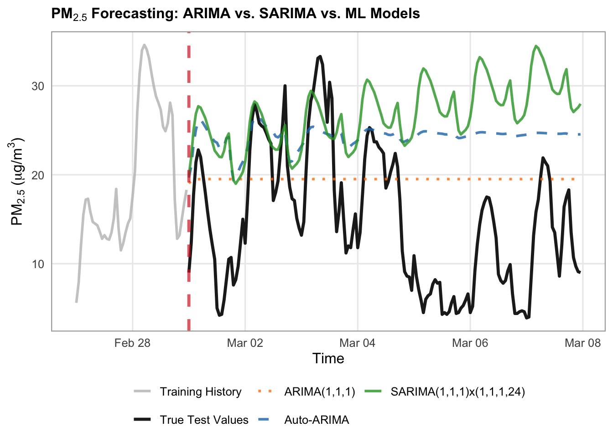
# Define models dictionary specifically for ARIMA/SARIMA
arima_forecasts = {
"ARIMA(1,1,1)": arima_preds,
"Auto-ARIMA": auto_preds,
"SARIMA(1,1,1)x(1,1,1,24)": sarima_preds,
}
# Styles for the dedicated plot
arima_styles = {
"ARIMA(1,1,1)": {
"color": "#ff7f0e", # muted orange
"linestyle": ":",
"linewidth": 1,
"alpha": 0.8,
},
"Auto-ARIMA": {
"color": "#1f77b4", # classic blue
"linestyle": "--",
"linewidth": 1,
"alpha": 0.8,
},
"SARIMA(1,1,1)x(1,1,1,24)": {
"color": "#2ca02c", # forest green
"linestyle": "-",
"linewidth": 1.5,
"alpha": 0.9,
},
}
# Set up canvas
fig, ax = plt.subplots(figsize=(14, 5.5), dpi=100)
train_history_hours = 48
test_forecast_hours = 168
train_history = y_train.tail(train_history_hours)
true_test_subset = y_test.head(test_forecast_hours)
# Plot History and True Test Data
ax.plot(
train_history.index,
train_history.values,
label="Training History",
color="black",
linewidth=1.2,
)
ax.plot(
true_test_subset.index,
true_test_subset.values,
label="True Test Values",
color="black",
linewidth=1.5,
zorder=10
)
# Loop and plot ARIMA/SARIMA models
for label, pred_series in arima_forecasts.items():
subset_vals = pred_series.reindex(true_test_subset.index)
style = arima_styles.get(label, {})
ax.plot(
true_test_subset.index,
subset_vals,
label=label,
color=style.get("color"),
linestyle=style.get("linestyle", "-"),
linewidth=style.get("linewidth", 1.5),
alpha=style.get("alpha", 1.0),
zorder=3,
)
# Vertical line separating train from test
ax.axvline(
x=true_test_subset.index[0],
color="#d62728",
linestyle="--",
linewidth=1.5,
alpha=0.7,
label="Forecast Start",
)
# 4. Formatting the layout
ax.set_title(
"PM₂.₅ Baseline Models: Training History & Test Forecast",
fontsize=16,
fontweight="bold",
)
ax.set_xlabel("Time", fontsize=16)
ax.set_ylabel(r"$\text{PM}_{2.5}$ ($\mu\text{g/m}^3$)", fontsize=16)
ax.tick_params(axis='x', labelsize=14)
ax.tick_params(axis='y', labelsize=14)
ax.grid(True, linestyle=":", alpha=0.6, color="darkgrey")
ax.legend(
loc="upper left",
frameon=True,
facecolor="white",
framealpha=0.95,
edgecolor="lightgrey",
fontsize=14,
)
fig.autofmt_xdate(rotation=45, ha="right")
fig.subplots_adjust(bottom=0.28, left=0.12, right=0.95, top=0.90)
plt.show()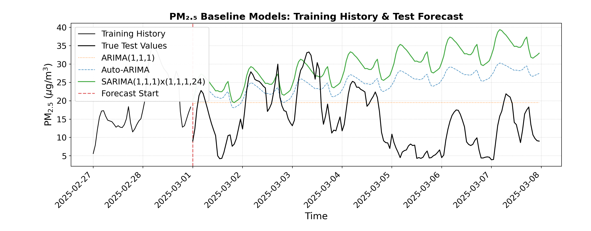
We can visually see that the both the Auto-ARIMA and the SARIMA models contain an overall increasing trend, which does not align well with the true test values. The ARIMA model, although it does not contain the small scale cyclicity that the more complex models do, better matches the overall trend of the data. This shows us that complex data, like this air pollution dataset, may have more intricacies and complexities than simple time series models can capture.
Another approach is to use SARIMAX, where we add explanatory variables to our SARIMA model. Weather and atmospheric changes can have a large impact on the longevity of air pollution, therefore these might be useful explanatory variables to incorporate into our modelling. We can pull weather information from Open Meteo as well and join it to our air pollution dataset.
# 1. Define location and time window
latitude <- 49.2827
longitude <- -123.1207
start_date <- "2024-03-01"
end_date <- "2025-05-31"
# 2. Query Open-Meteo's Archive API using query parameters list
url <- "https://archive-api.open-meteo.com/v1/archive"
params <- list(
latitude = latitude,
longitude = longitude,
start_date = start_date,
end_date = end_date,
hourly = c("temperature_2m", "relative_humidity_2m", "precipitation", "cloud_cover", "wind_speed_10m", "wind_speed_100m")
)
# fromJSON handles query lists natively when constructed via httr or passed correctly,
# or we can build the URL string safely using paste()
query_string <- paste0(
url, "?latitude=", latitude,
"&longitude=", longitude,
"&start_date=", start_date,
"&end_date=", end_date,
"&hourly=temperature_2m,relative_humidity_2m,precipitation,cloud_cover,wind_speed_10m,wind_speed_100m"
)
data <- fromJSON(query_string)
# 3. Parse hourly payload into a data frame (using ymd_hm for ISO strings with 'T')
hourly_df <- as.data.frame(data$hourly) |>
mutate(time = ymd_hm(time))
# Join the weather data to the air quality data on the time column
combined_df <- df |>
inner_join(hourly_df, by = "time")
head(combined_df) time pm10 pm2_5 nitrogen_dioxide us_aqi hour day_of_week
1 2024-03-01 00:00:00 5.1 3.0 11.0 35 0 Friday
2 2024-03-01 01:00:00 6.2 3.9 18.6 36 1 Friday
3 2024-03-01 02:00:00 5.0 3.2 29.1 36 2 Friday
4 2024-03-01 03:00:00 7.1 4.7 36.7 35 3 Friday
5 2024-03-01 04:00:00 7.6 5.0 39.4 33 4 Friday
6 2024-03-01 05:00:00 9.0 6.0 39.2 31 5 Friday
is_weekend temperature_2m relative_humidity_2m precipitation cloud_cover
1 FALSE 4.2 86 1.7 100
2 FALSE 3.0 87 0.3 100
3 FALSE 2.1 92 0.4 100
4 FALSE 1.8 90 2.3 99
5 FALSE 0.9 91 4.9 100
6 FALSE 1.0 90 0.9 100
wind_speed_10m wind_speed_100m
1 13.3 17.3
2 15.9 22.4
3 17.3 25.7
4 17.7 27.0
5 15.9 26.0
6 16.5 26.3# Load weather data for the same time frame
# 1. Define location and time window
latitude = 49.2827
longitude = -123.1207
start_date = "2024-03-01"
end_date = "2025-05-31"
# 2. Query Open-Meteo's Archive API for daily aggregations
url = "https://archive-api.open-meteo.com/v1/archive"
params = {
"latitude": latitude,
"longitude": longitude,
"start_date": start_date,
"end_date": end_date,
"hourly": ["temperature_2m", "relative_humidity_2m", "precipitation", "cloud_cover", "wind_speed_10m", "wind_speed_100m"],
}
response = requests.get(url, params=params)
data = response.json()
# 3. Parse daily payload into a Pandas DataFrame
hourly_data = data["hourly"]
hourly_df = pd.DataFrame(hourly_data)
hourly_df["time"] = pd.to_datetime(hourly_df["time"])
# Set date as the index
hourly_df.set_index("time", inplace=True)
# Join the weather data to the air quality data on the index
combined_df = pd.merge(
df,
hourly_df,
how = 'inner',
on = 'time'
)
combined_df.head() pm10 pm2_5 ... wind_speed_10m wind_speed_100m
time ...
2024-03-01 00:00:00 5.1 3.0 ... 13.3 17.3
2024-03-01 01:00:00 6.2 3.9 ... 15.9 22.4
2024-03-01 02:00:00 5.0 3.2 ... 17.3 25.7
2024-03-01 03:00:00 7.1 4.7 ... 17.7 27.0
2024-03-01 04:00:00 7.6 5.0 ... 15.9 26.0
[5 rows x 13 columns]Next let’s train and test our SARIMAX model, using the following as explanatory variables:
- Temperature at 2m height
- Relative humidity at 2m
- Precipitation
- Cloud cover
- Wind speed at 10m height
- Wind speed at 100m height
# 1. List weather/temperature feature columns and set up train/test slices
target_col <- "pm2_5"
exog_cols <- c(
"temperature_2m",
"relative_humidity_2m",
"precipitation",
"cloud_cover",
"wind_speed_10m",
"wind_speed_100m"
)
cutoff_date <- as.POSIXct("2025-03-01", tz = "UTC")
slice_df <- combined_df |>
filter(time >= as.POSIXct("2024-03-01", tz = "UTC") & time <= as.POSIXct("2025-05-31", tz = "UTC"))
train_df <- slice_df |> filter(time < cutoff_date)
test_df <- slice_df |> filter(time >= cutoff_date)
# Training subsets (last 28 days)
train_window <- 28 * 24
train_subset_df <- train_df |> tail(train_window)
y_train_subset <- train_subset_df[[target_col]]
X_train_subset <- as.matrix(train_subset_df |> select(all_of(exog_cols)))
# Test forecast subsets (first 168 hours)
test_window <- 168
test_subset_df <- test_df |> head(test_window)
y_test_subset <- test_subset_df[[target_col]]
X_test_subset <- as.matrix(test_subset_df |> select(all_of(exog_cols)))
# 2. Fit SARIMAX (using xreg for exogenous variables in base R arima)
sarimax_model <- arima(
x = y_train_subset,
order = c(1, 1, 1),
seasonal = list(order = c(1, 1, 1), period = 24),
xreg = X_train_subset
)
# 3. Forecast using the test exogenous features
forecast_obj <- predict(sarimax_model, n.ahead = length(y_test_subset), newxreg = X_test_subset)
sarimax_preds <- forecast_obj$pred
# Evaluate the SARIMAX performance
sarimax_preds_vals <- as.numeric(sarimax_preds)
residuals <- y_test_subset - sarimax_preds_vals
sarimax_rmse <- sqrt(mean(residuals^2, na.rm = TRUE))
sarimax_mae <- mean(abs(residuals), na.rm = TRUE)
cat(sprintf("SARIMAX with Weather (1-week test) -> RMSE: %.2f, MAE: %.2f\n", sarimax_rmse, sarimax_mae))SARIMAX with Weather (1-week test) -> RMSE: 14.55, MAE: 12.51# List weather/temperature feature columns
target_col = "pm2_5"
exog_cols = [
"temperature_2m",
"relative_humidity_2m",
"precipitation",
"cloud_cover",
"wind_speed_10m",
"wind_speed_100m"
]
slice = combined_df.loc["2024-03-01":"2025-05-31"]
cutoff_date = "2025-03-01"
train_df = slice.loc[slice.index < cutoff_date]
test_df = slice.loc[slice.index >= cutoff_date]
X_train = train_df[exog_cols]
y_train = train_df[target_col]
X_test = test_df[exog_cols]
y_test = test_df[target_col]
# Training slices (e.g., last 28 days of training data for fast fitting)
train_window = 28 * 24
y_train_subset = y_train.tail(train_window).asfreq("h")
X_train_subset = X_train.tail(train_window).asfreq("h")
# Test forecast slice (e.g., first 168 hours of test data)
test_window = 168
y_test_subset = y_test.head(test_window).asfreq("h")
X_test_subset = X_test.head(test_window).asfreq("h")
# 2. Fit SARIMAX with increased maxiter to allow convergence
sarimax_model = SARIMAX(
endog=y_train_subset,
exog=X_train_subset,
order=(1, 1, 1),
seasonal_order=(1, 1, 1, 24),
enforce_stationarity=False,
enforce_invertibility=False,
)
# Bump up maxiter to give the optimizer enough room to converge
sarimax_fitted = sarimax_model.fit(disp=False, maxiter=200)
# 3. Forecast using the test exogenous features
sarimax_preds = sarimax_fitted.forecast(
steps=len(y_test_subset), exog=X_test_subset
)
sarimax_preds = pd.Series(sarimax_preds, index=y_test_subset.index)
# 3. Evaluate the new SARIMAX performance
sarimax_rmse = np.sqrt(mean_squared_error(y_test_subset, sarimax_preds))
sarimax_mae = mean_absolute_error(y_test_subset, sarimax_preds)
print(
f"SARIMAX with Weather (1-week test) -> RMSE: {sarimax_rmse:.2f},"
f" MAE: {sarimax_mae:.2f}"
)SARIMAX with Weather (1-week test) -> RMSE: 16.59, MAE: 14.28Let’s visualize our SARIMAX results along with the ARIMA and SARIMA models.
# 1. Prepare dataframes for plotting
train_history_hours <- 24
test_forecast_hours <- 168
train_history_df <- train_df |>
tail(train_history_hours) |>
select(time, y = !!sym(target_col)) |>
mutate(Series = "Training History")
true_test_subset <- test_df |>
head(test_forecast_hours) |>
select(time, y = !!sym(target_col)) |>
mutate(Series = "True Test Values")
forecast_subset_index <- true_test_subset$time
transition_time <- forecast_subset_index[1]
# Combine all ARIMA, SARIMA, and SARIMAX predictions into a data frame
arima_forecasts_df <- bind_rows(
data.frame(time = forecast_subset_index,
y = as.numeric(head(arima_preds, test_forecast_hours)),
Label = "ARIMA(1,1,1)"),
data.frame(time = forecast_subset_index,
y = as.numeric(head(auto_preds, test_forecast_hours)),
Label = "Auto-ARIMA"),
data.frame(time = forecast_subset_index,
y = as.numeric(head(sarima_preds, test_forecast_hours)),
Label = "SARIMA(1,1,1)x(1,1,1,24)"),
data.frame(time = forecast_subset_index,
y = as.numeric(head(sarimax_preds, test_forecast_hours)),
Label = "SARIMAX")
)
# 2. Plotting with ggplot2
ggplot() +
# Plot Training History
geom_line(
data = train_history_df,
aes(x = time, y = y, color = Series, linetype = Series),
linewidth = 1,
alpha = 0.6
) +
# Plot True Test Values
geom_line(
data = true_test_subset,
aes(x = time, y = y, color = Series, linetype = Series),
linewidth = 1.4,
alpha = 0.8
) +
# Plot Model Forecasts
geom_line(
data = arima_forecasts_df,
aes(x = time, y = y, color = Label, linetype = Label),
linewidth = 1,
alpha = 0.85
) +
# Vertical transition line
geom_vline(
xintercept = transition_time,
color = "#d62728",
linetype = "dotted",
linewidth = 0.8,
alpha = 0.7
) +
# Custom colors mapping
scale_color_manual(
name = NULL,
breaks = c("Training History", "True Test Values", "ARIMA(1,1,1)", "Auto-ARIMA", "SARIMA(1,1,1)x(1,1,1,24)", "SARIMAX"),
values = c(
"Training History" = "gray",
"True Test Values" = "#222222",
"ARIMA(1,1,1)" = "#ff7f0e",
"Auto-ARIMA" = "#1f77b4",
"SARIMA(1,1,1)x(1,1,1,24)" = "#2ca02c",
"SARIMAX" = "#4A148C"
)
) +
scale_linetype_manual(
name = NULL,
values = c(
"Training History" = "solid",
"True Test Values" = "solid",
"ARIMA(1,1,1)" = "dotted",
"Auto-ARIMA" = "dashed",
"SARIMA(1,1,1)x(1,1,1,24)" = "solid",
"SARIMAX" = "dotdash"
),
guide = "none"
) +
labs(
title = expression(bold(paste(PM[2.5], " Forecasting: ARIMA vs. SARIMA vs. SARIMAX Models"))),
x = "Time",
y = expression(paste(PM[2.5], " (", mu, "g/m"^3, ")"))
) +
theme_minimal(base_size = 12) +
theme(
plot.title = element_text(face = "bold", size = 12),
legend.position = "bottom",
legend.box = "horizontal",
legend.margin = ggplot2::margin(t = 0, r = 0, b = 0, l = 0),
legend.background = element_rect(fill = "white", color = NA),
panel.grid.minor = element_blank(),
panel.border = element_rect(color = "darkgrey", fill = NA, linewidth = 0.8)
) +
guides(color = guide_legend(nrow = 2, override.aes = list(linetype = c("solid", "solid", "dashed", "dashed", "dashed", "dotdash"))))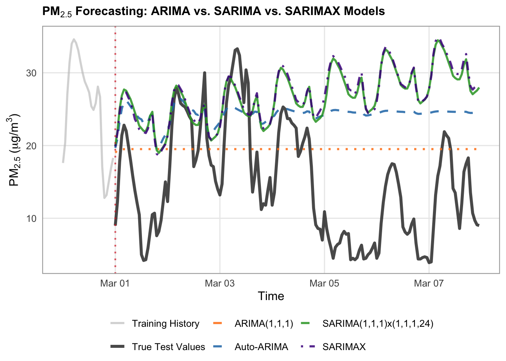
# Define your models dictionary specifically for ARIMA/SARIMA
arima_forecasts = {
"ARIMA(1,1,1)": arima_preds,
"Auto-ARIMA": auto_preds,
"SARIMA(1,1,1)x(1,1,1,24)": sarima_preds,
"SARIMAX": sarimax_preds,
}
# Styles for the dedicated plot
arima_styles = {
"ARIMA(1,1,1)": {
"color": "#ff7f0e",
"linestyle": "--",
"linewidth": 1.5,
"alpha": 0.85,
},
"Auto-ARIMA": {
"color": "#1f77b4",
"linestyle": "--",
"linewidth": 1.5,
"alpha": 0.85,
},
"SARIMA(1,1,1)x(1,1,1,24)": {
"color": "#2ca02c", # green
"linestyle": "-",
"linewidth": 1.75,
"alpha": 0.85,
},
"SARIMAX": {
"color": "#4A148C", # blue
"linestyle": "-.",
"linewidth": 1.75,
"alpha": 0.85,
},
}
# Set up canvas
fig, ax = plt.subplots(figsize=(14, 5.5), dpi=100)
train_history_hours = 24
test_forecast_hours = 168
train_history = y_train.tail(train_history_hours)
true_test_subset = y_test.head(test_forecast_hours)
# Plot History and True Test Data
ax.plot(
train_history.index,
train_history.values,
label="Training History (Last 24h)",
color="gray",
linewidth=1.2,
alpha=0.6,
)
ax.plot(
true_test_subset.index,
true_test_subset.values,
label="True Test Values",
color="#222222",
linewidth=2,
alpha=0.8,
zorder=5,
)
# Loop and plot ARIMA/SARIMA models
for label, pred_series in arima_forecasts.items():
subset_vals = pred_series.loc[true_test_subset.index]
style = arima_styles.get(label, {})
ax.plot(
true_test_subset.index,
subset_vals,
label=label,
color=style.get("color"),
linestyle=style.get("linestyle", "-"),
linewidth=style.get("linewidth", 1.5),
alpha=style.get("alpha", 1.0),
)
# Vertical line separating train from test
ax.axvline(
x=true_test_subset.index[0],
color="#d62728",
linestyle=":",
linewidth=1.5,
alpha=0.7,
label="Forecast Start",
)
# 4. Formatting the layout
ax.set_title(
"PM₂.₅ Baseline Models: Training History & Test Forecast",
fontsize=16,
fontweight="bold",
)
ax.set_xlabel("Time", fontsize=16)
ax.set_ylabel(r"$\text{PM}_{2.5}$ ($\mu\text{g/m}^3$)", fontsize=16)
ax.tick_params(axis='x', labelsize=14)
ax.tick_params(axis='y', labelsize=14)
ax.grid(True, linestyle=":", alpha=0.6, color="darkgrey")
ax.legend(
loc="upper left",
frameon=True,
facecolor="white",
framealpha=0.95,
edgecolor="lightgrey",
fontsize=14,
)
fig.autofmt_xdate(rotation=45, ha="right")
fig.subplots_adjust(bottom=0.28, left=0.12, right=0.95, top=0.90)
plt.show()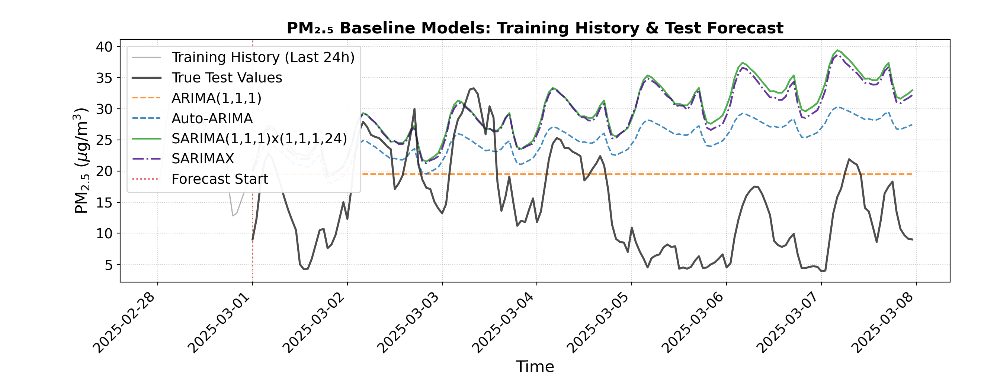
We can see from the visualization that the SARIMAX predictions are almost identical to the SARIMA predictions, and that the RMSE and MAE are still quite high for SARIMAX. This indicates that adding these explanatory weather variables did not help our SARIMA model, and the limitations therefore may be with the model itself, rather than the amount of information it has to work with. We can pivot away from traditional time series models, and instead try machine learning for our air pollution prediction task.
Machine Learning
While classical statistical models do well at capturing simpler temporal structures, machine learning algorithms can be more flexible, allowing them to capture complex, non-linear relationships and multi-variable interactions. However, we need to do a bit of feature engineering to set up our time series data in a way that standard tabular machine learning models can understand. To do this, we introduce lags, which are historical observations of our target variable shifted back by specific time intervals (such as the immediate past hour \(t-1\) or the corresponding hour from the previous day \(t-24\)).
# 1. Feature Engineering function that incorporates target lags and time features
build_ml_dataset <- function(df_subset, target_col, max_lags = 24) {
# Create base data frame with time and target
df <- df_subset |>
select(time, y = !!sym(target_col))
# Add lag features for the target (past 1 to 24 hours) using dplyr::lag
for (lag in 1:max_lags) {
col_name <- paste0("lag_", lag)
df[[col_name]] <- lag(df$y, n = lag)
}
# Add calendar/time features from time column
df <- df |>
mutate(
hour = hour(time),
day_of_week = wday(time, week_start = 1) - 1, # 0-indexed day of week (Monday = 0)
is_weekend = if_else(day_of_week >= 5, 1, 0)
) |>
na.omit() # Drop rows with NaN/NA values created by lagging
y_out <- df$y
X_out <- df |> select(-time, -y)
list(X = X_out, y = y_out, time = df$time)
}
target_col <- "pm2_5"
# 2. Build ML feature matrices for train and test periods
train_ml <- build_ml_dataset(train_df, target_col, max_lags = 24)
X_train_ml <- train_ml$X
y_train_ml <- train_ml$y
train_time <- train_ml$time
test_ml <- build_ml_dataset(test_df, target_col, max_lags = 24)
X_test_ml <- test_ml$X
y_test_ml <- test_ml$y
test_time <- test_ml$time
# 3. Take the train and test subsets
train_window <- 28 * 24
X_tr_sub <- tail(X_train_ml, train_window)
y_tr_sub <- tail(y_train_ml, train_window)
test_window <- 168
test_subset_index <- head(test_df$time, test_window)
# Filter test subset matching the first 168 hours of test data
test_mask <- test_time %in% test_subset_index
X_te_sub <- X_test_ml[test_mask, ]
y_te_sub <- y_test_ml[test_mask]
# 1. Feature Engineering function that incorporates target lags and time features
def build_ml_dataset(df_subset, target_col, max_lags=24):
df = pd.DataFrame({"y": df_subset[target_col]})
# Add lag features for the target (past 1 to 24 hours)
for lag in range(1, max_lags + 1):
df[f"lag_{lag}"] = df["y"].shift(lag)
# Add calendar/time features from index
df["hour"] = df.index.hour
df["day_of_week"] = df.index.dayofweek
df["is_weekend"] = (df.index.dayofweek >= 5).astype(int)
# Drop rows with NaN values created by lagging
df = df.dropna()
y_out = df["y"]
X_out = df.drop(columns=["y"])
return X_out, y_out
target_col = "pm2_5"
# 2. Build ML feature matrices for train and test periods
X_train_ml, y_train_ml = build_ml_dataset(
train_df, target_col, max_lags=24
)
X_test_ml, y_test_ml = build_ml_dataset(
test_df, target_col, max_lags=24
)
# 3. Take the train and test subsets
train_window = 28 * 24
X_tr_sub = X_train_ml.tail(train_window).asfreq("h")
y_tr_sub = y_train_ml.tail(train_window).asfreq("h")
test_window = 168
X_te_sub = X_test_ml.loc[X_test_ml.index.isin(y_test.head(test_window).index)].asfreq("h")
y_te_sub = y_test_ml.loc[y_test_ml.index.isin(y_test.head(test_window).index)].asfreq("h")Next, let’s train and evaluate our machine learning model on the train and test sets. We will use a Random Forest Regressor. A random forest is built on decision trees, which work like a series of flowchart-style yes/no questions to step-by-step narrow down a predicted value. While a single decision tree is intuitive, it is prone to overfitting and can easily get thrown off by noisy environmental data.
A random forest solves this weakness by combining dozens or hundreds of individual decision trees into a collective “forest”. Each tree is trained on a slightly different random subset of the data and features, and then the final forecast is simply the average of all the individual trees’ predictions. This teamwork smooths out individual errors, making the model remarkably robust and well-suited for capturing complex, non-linear interactions.
# 4. Train the Random Forest Regressor
# Set seed for reproducibility (equivalent to random_state=42)
set.seed(42)
rf_model <- randomForest(
x = X_tr_sub,
y = y_tr_sub,
ntree = 100
)
# 5. Predict and Evaluate
rf_preds <- predict(rf_model, newdata = X_te_sub)
residuals <- y_te_sub - rf_preds
rf_rmse <- sqrt(mean(residuals^2, na.rm = TRUE))
rf_mae <- mean(abs(residuals), na.rm = TRUE)
cat(sprintf("Random Forest ML Pipeline (1-week test) -> RMSE: %.2f, MAE: %.2f\n", rf_rmse, rf_mae))Random Forest ML Pipeline (1-week test) -> RMSE: 2.57, MAE: 1.98# 4. Train the Random Forest Regressor
rf_model = RandomForestRegressor(n_estimators=100, random_state=42)
rf_model.fit(X_tr_sub, y_tr_sub)RandomForestRegressor(random_state=42)In a Jupyter environment, please rerun this cell to show the HTML representation or trust the notebook.
On GitHub, the HTML representation is unable to render, please try loading this page with nbviewer.org.
Parameters
| n_estimators | 100 | |
| criterion | 'squared_error' | |
| max_depth | None | |
| min_samples_split | 2 | |
| min_samples_leaf | 1 | |
| min_weight_fraction_leaf | 0.0 | |
| max_features | 1.0 | |
| max_leaf_nodes | None | |
| min_impurity_decrease | 0.0 | |
| bootstrap | True | |
| oob_score | False | |
| n_jobs | None | |
| random_state | 42 | |
| verbose | 0 | |
| warm_start | False | |
| ccp_alpha | 0.0 | |
| max_samples | None | |
| monotonic_cst | None |
# 5. Predict and Evaluate
rf_preds = pd.Series(rf_model.predict(X_te_sub), index=X_te_sub.index)
rf_rmse = np.sqrt(mean_squared_error(y_te_sub, rf_preds))
rf_mae = mean_absolute_error(y_te_sub, rf_preds)
print(
f"Random Forest ML Pipeline (1-week test) -> RMSE: {rf_rmse:.2f},"
f" MAE: {rf_mae:.2f}"
)Random Forest ML Pipeline (1-week test) -> RMSE: 2.49, MAE: 1.80Let’s visually compare our random forest to the ARIMA/SARIMA models.
# 1. Prepare dataframes for plotting
train_history_hours <- 24
test_forecast_hours <- 168
train_history_df <- train_df |>
tail(train_history_hours) |>
select(time, y = !!sym(target_col)) |>
mutate(Series = "Training History")
true_test_subset <- test_df |>
head(test_forecast_hours) |>
select(time, y = !!sym(target_col)) |>
mutate(Series = "True Test Values")
forecast_subset_index <- true_test_subset$time
transition_time <- forecast_subset_index[1]
# Helper for statistical models (starts immediately at index 1)
safe_forecast_vector <- function(preds, n = test_forecast_hours) {
vals <- as.numeric(preds)
if (length(vals) < n) {
c(vals, rep(NA, n - length(vals)))
} else {
head(vals, n)
}
}
# Helper for ML models that need to start 24 hours later due to lags
safe_ml_forecast_vector <- function(preds, lag_offset = 24, n = test_forecast_hours) {
vals <- as.numeric(preds)
# Pad the front with NA for the lag window, then append predictions
padded_vals <- c(rep(NA, lag_offset), vals)
if (length(padded_vals) < n) {
c(padded_vals, rep(NA, n - length(padded_vals)))
} else {
head(padded_vals, n)
}
}
# Combine all model predictions into a data frame matching the test subset
all_forecasts_df <- bind_rows(
data.frame(time = forecast_subset_index, y = safe_forecast_vector(arima_preds_vals), Label = "ARIMA(1,1,1)"),
data.frame(time = forecast_subset_index, y = safe_forecast_vector(auto_preds_vals), Label = "Auto-ARIMA"),
data.frame(time = forecast_subset_index, y = safe_forecast_vector(sarima_preds_vals), Label = "SARIMA(1,1,1)x(1,1,1,24)"),
data.frame(time = forecast_subset_index, y = safe_forecast_vector(sarimax_preds), Label = "SARIMAX"),
data.frame(time = forecast_subset_index, y = safe_ml_forecast_vector(rf_preds), Label = "Random Forest")
)
# 2. Plotting with ggplot2 (linewidths reduced by 0.5)
ggplot() +
# Plot Training History
geom_line(
data = train_history_df,
aes(x = time, y = y, color = Series, linetype = Series),
linewidth = 1,
alpha = 0.8
) +
# Plot True Test Values
geom_line(
data = true_test_subset,
aes(x = time, y = y, color = Series, linetype = Series),
linewidth = 1.2,
alpha = 0.8
) +
# Plot Model Forecasts
geom_line(
data = all_forecasts_df,
aes(x = time, y = y, color = Label, linetype = Label),
linewidth = 1,
alpha = 0.85
) +
# Vertical transition line
geom_vline(
xintercept = transition_time,
color = "#d62728",
linetype = "dashed",
linewidth = 0.8,
alpha = 0.7
) +
# Custom colors mapping
scale_color_manual(
name = NULL,
breaks = c("Training History", "True Test Values", "ARIMA(1,1,1)", "Auto-ARIMA", "SARIMA(1,1,1)x(1,1,1,24)", "SARIMAX", "Random Forest"),
values = c(
"Training History" = "gray",
"True Test Values" = "black",
"ARIMA(1,1,1)" = "#ff7f0e",
"Auto-ARIMA" = "#1f77b4",
"SARIMA(1,1,1)x(1,1,1,24)" = "#2ca02c",
"SARIMAX" = "#4A148C",
"Random Forest" = "#9467bd"
)
) +
scale_linetype_manual(
name = NULL,
values = c(
"Training History" = "solid",
"True Test Values" = "solid",
"ARIMA(1,1,1)" = "dotted",
"Auto-ARIMA" = "dashed",
"SARIMA(1,1,1)x(1,1,1,24)" = "solid",
"SARIMAX" = "dotdash",
"Random Forest" = "solid"
),
guide = "none"
) +
labs(
title = expression(bold(paste(PM[2.5], " Forecasting: ARIMA vs. SARIMA vs. ML Models"))),
x = "Time",
y = expression(paste(PM[2.5], " (", mu, "g/m"^3, ")"))
) +
theme_minimal(base_size = 12) +
theme(
plot.title = element_text(face = "bold", size = 14),
legend.position = "bottom",
legend.box = "horizontal",
legend.margin = ggplot2::margin(t = 0, r = 0, b = 0, l = 0),
legend.background = element_rect(fill = "white", color = NA),
panel.grid.minor = element_blank(),
panel.border = element_rect(color = "darkgrey", fill = NA, linewidth = 0.8)
) +
guides(color = guide_legend(nrow = 2, override.aes = list(linetype = c("solid", "solid", "dashed", "dashed", "dashed", "dotdash", "solid"))))Warning: Removed 24 rows containing missing values or values outside the scale range
(`geom_line()`).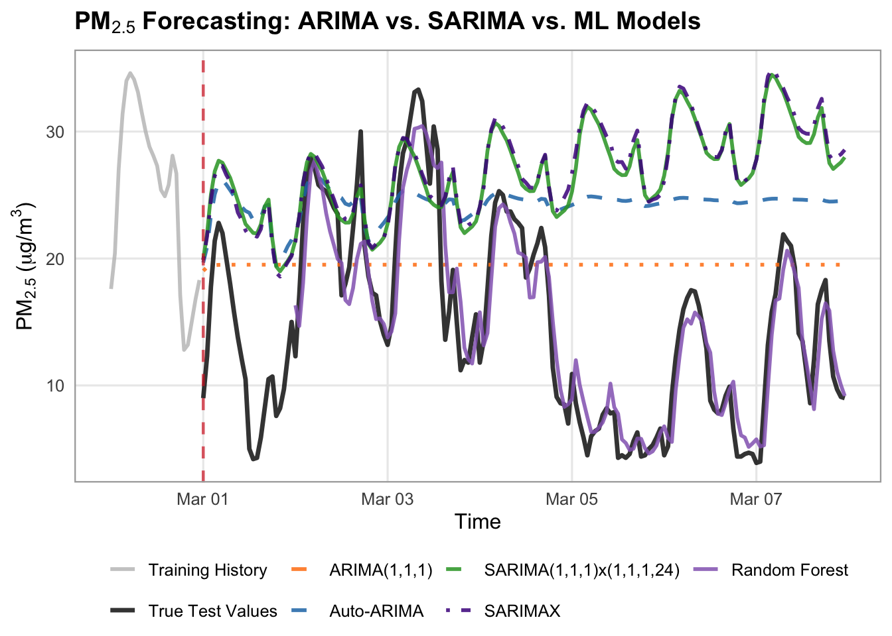
# Define your models dictionary specifically for ARIMA/SARIMA
arima_forecasts = {
"ARIMA(1,1,1)": arima_preds,
"Auto-ARIMA": auto_preds,
"SARIMA(1,1,1)x(1,1,1,24)": sarima_preds,
"SARIMAX": sarimax_preds,
"Random Forest": rf_preds,
}
# Styles for the dedicated plot
arima_styles = {
"ARIMA(1,1,1)": {
"color": "#ff7f0e",
"linestyle": "--",
"linewidth": 1.75,
"alpha": 0.85,
},
"Auto-ARIMA": {
"color": "#1f77b4",
"linestyle": "--",
"linewidth": 1.75,
"alpha": 0.85,
},
"SARIMA(1,1,1)x(1,1,1,24)": {
"color": "#2ca02c", # green
"linestyle": "-",
"linewidth": 1.75,
"alpha": 0.85,
},
"SARIMAX": {
"color": "#4A148C", # blue
"linestyle": "-.",
"linewidth": 1.75,
"alpha": 0.85,
},
"Random Forest": {
"color": "#9467bd", # purple
"linestyle": "-",
"linewidth": 2,
"alpha": 0.9,
},
}
# Set up canvas
fig, ax = plt.subplots(figsize=(14, 5.5), dpi=100)
train_history_hours = 24
test_forecast_hours = 168
train_history = y_train.tail(train_history_hours)
true_test_subset = y_test.head(test_forecast_hours)
# Plot History and True Test Data
ax.plot(
train_history.index,
train_history.values,
label="Training History",
color="black",
linewidth=1.2,
)
ax.plot(
true_test_subset.index,
true_test_subset.values,
label="True Test Values",
color="black",
linewidth=2,
zorder=10
)
# Loop and plot ARIMA/SARIMA models
for label, pred_series in arima_forecasts.items():
subset_vals = pred_series.reindex(true_test_subset.index)
style = arima_styles.get(label, {})
ax.plot(
true_test_subset.index,
subset_vals,
label=label,
color=style.get("color"),
linestyle=style.get("linestyle", "-"),
linewidth=style.get("linewidth", 1.5),
alpha=style.get("alpha", 1.0),
zorder=3,
)
# Vertical line separating train from test
ax.axvline(
x=true_test_subset.index[0],
color="#d62728",
linestyle="--",
linewidth=1.5,
alpha=0.7,
label="Forecast Start",
)
# 4. Formatting the layout
ax.set_title(
"PM₂.₅ Baseline Models: Training History & Test Forecast",
fontsize=16,
fontweight="bold",
)
ax.set_xlabel("Time", fontsize=16)
ax.set_ylabel(r"$\text{PM}_{2.5}$ ($\mu\text{g/m}^3$)", fontsize=16)
ax.tick_params(axis='x', labelsize=14)
ax.tick_params(axis='y', labelsize=14)
ax.grid(True, linestyle=":", alpha=0.6, color="darkgrey")
ax.legend(
loc="upper left",
frameon=True,
facecolor="white",
framealpha=0.95,
edgecolor="lightgrey",
fontsize=14,
)
fig.autofmt_xdate(rotation=45, ha="right")
fig.subplots_adjust(bottom=0.28, left=0.12, right=0.95, top=0.90)
plt.show()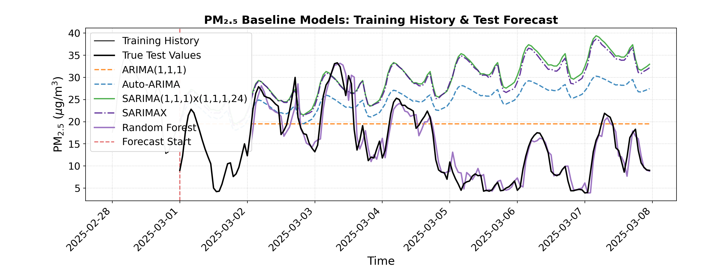
The random forest model did amazingly! It has the lowest RMSE and MAE (2.49 and 1.80 respectively) of any model we have tried, and visually very closely follows the true test values. By using lagged features like \(t-1\) and \(t-24\), the model successfully combined short-term momentum with daily cyclical awareness, allowing it to track sharp diurnal pollution spikes that simpler statistical models tended to smooth out.
We have one more possible improvement to attempt, which is to give our random forest model the weather features as well, and see if additional environmental context improves these predictions even further.
# 1. Feature Engineering function incorporating target lags, time features, AND weather exogenous features
build_ml_dataset_weather <- function(df_subset, target_col, exog_cols, max_lags = 24) {
# Select target, time, and weather exog columns
df <- df_subset |>
select(time, y = !!sym(target_col), all_of(exog_cols))
# Add lag features for the target (past 1 to 24 hours) using dplyr::lag
for (lag in 1:max_lags) {
col_name <- paste0("lag_", lag)
df[[col_name]] <- lag(df$y, n = lag)
}
# Add calendar/time features from time column
df <- df |>
mutate(
hour = hour(time),
day_of_week = wday(time, week_start = 1) - 1, # 0-indexed day of week (Monday = 0)
is_weekend = if_else(day_of_week >= 5, 1, 0)
) |>
na.omit() # Drop rows with NA values created by lagging
y_out <- df$y
X_out <- df |> select(-time, -y)
list(X = X_out, y = y_out, time = df$time)
}
# 2. Build ML feature matrices for train and test periods
train_ml_w <- build_ml_dataset_weather(train_df, target_col, exog_cols, max_lags = 24)
X_train_ml <- train_ml_w$X
y_train_ml <- train_ml_w$y
train_time <- train_ml_w$time
test_ml_w <- build_ml_dataset_weather(test_df, target_col, exog_cols, max_lags = 24)
X_test_ml <- test_ml_w$X
y_test_ml <- test_ml_w$y
test_time <- test_ml_w$time
# 3. Take the train and test subsets
train_window <- 28 * 24
X_tr_sub <- tail(X_train_ml, train_window)
y_tr_sub <- tail(y_train_ml, train_window)
test_window <- 168
test_subset_index <- head(test_df$time, test_window)
# Filter test subset matching the first 168 hours of test data
test_mask <- test_time %in% test_subset_index
X_te_sub <- X_test_ml[test_mask, ]
y_te_sub <- y_test_ml[test_mask]
# 1. Feature Engineering function that incorporates target lags, time features, AND weather exogenous features
def build_ml_dataset_weather(df_subset, target_col, exog_cols, max_lags=24):
# Copy subset to avoid SettingWithCopy warnings
df = df_subset[exog_cols].copy()
df["y"] = df_subset[target_col]
# Add lag features for the target (past 1 to 24 hours)
for lag in range(1, max_lags + 1):
df[f"lag_{lag}"] = df["y"].shift(lag)
# Add calendar/time features from index
df["hour"] = df.index.hour
df["day_of_week"] = df.index.dayofweek
df["is_weekend"] = (df.index.dayofweek >= 5).astype(int)
# Drop rows with NaN values created by lagging
df = df.dropna()
y_out = df["y"]
X_out = df.drop(columns=["y"])
return X_out, y_out
# 2. Build ML feature matrices for train and test periods
X_train_ml, y_train_ml = build_ml_dataset_weather(
train_df, target_col, exog_cols, max_lags=24
)
X_test_ml, y_test_ml = build_ml_dataset_weather(
test_df, target_col, exog_cols, max_lags=24
)
# 3. Take the train and test subsets
train_window = 28 * 24
X_tr_sub = X_train_ml.tail(train_window).asfreq("h")
y_tr_sub = y_train_ml.tail(train_window).asfreq("h")
test_window = 168
X_te_sub = X_test_ml.loc[X_test_ml.index.isin(y_test.head(test_window).index)].asfreq("h")
y_te_sub = y_test_ml.loc[y_test_ml.index.isin(y_test.head(test_window).index)].asfreq("h")# 4. Train the Random Forest Regressor
# Set seed for reproducibility (equivalent to random_state=42)
set.seed(42)
rf_model_weather <- randomForest(
x = X_tr_sub,
y = y_tr_sub,
ntree = 100
)
# 5. Predict and Evaluate
rf_preds_weather <- predict(rf_model_weather, newdata = X_te_sub)
residuals_weather <- y_te_sub - rf_preds_weather
rf_rmse_weather <- sqrt(mean(residuals_weather^2, na.rm = TRUE))
rf_mae_weather <- mean(abs(residuals_weather), na.rm = TRUE)
cat(sprintf("Random Forest ML Pipeline (1-week test) -> RMSE: %.2f, MAE: %.2f\n", rf_rmse_weather, rf_mae_weather))Random Forest ML Pipeline (1-week test) -> RMSE: 2.53, MAE: 1.92# 4. Train the Random Forest Regressor
rf_model_weather = RandomForestRegressor(n_estimators=100, random_state=42)
rf_model_weather.fit(X_tr_sub, y_tr_sub)RandomForestRegressor(random_state=42)In a Jupyter environment, please rerun this cell to show the HTML representation or trust the notebook.
On GitHub, the HTML representation is unable to render, please try loading this page with nbviewer.org.
Parameters
| n_estimators | 100 | |
| criterion | 'squared_error' | |
| max_depth | None | |
| min_samples_split | 2 | |
| min_samples_leaf | 1 | |
| min_weight_fraction_leaf | 0.0 | |
| max_features | 1.0 | |
| max_leaf_nodes | None | |
| min_impurity_decrease | 0.0 | |
| bootstrap | True | |
| oob_score | False | |
| n_jobs | None | |
| random_state | 42 | |
| verbose | 0 | |
| warm_start | False | |
| ccp_alpha | 0.0 | |
| max_samples | None | |
| monotonic_cst | None |
# 5. Predict and Evaluate
rf_preds_weather = pd.Series(rf_model_weather.predict(X_te_sub), index=X_te_sub.index)
rf_rmse_weather = np.sqrt(mean_squared_error(y_te_sub, rf_preds_weather))
rf_mae_weather = mean_absolute_error(y_te_sub, rf_preds_weather)
print(
f"Random Forest ML Pipeline (1-week test) -> RMSE: {rf_rmse_weather:.2f},"
f" MAE: {rf_mae_weather:.2f}"
)Random Forest ML Pipeline (1-week test) -> RMSE: 2.45, MAE: 1.75# Combine all model predictions into a data frame matching the test subset with correct offsets
all_forecasts_df <- bind_rows(
data.frame(time = forecast_subset_index, y = safe_forecast_vector(sarima_preds_vals), Label = "SARIMA"),
data.frame(time = forecast_subset_index, y = safe_forecast_vector(sarimax_preds), Label = "SARIMAX"),
data.frame(time = forecast_subset_index, y = safe_ml_forecast_vector(rf_preds, lag_offset = 24), Label = "Random Forest"),
data.frame(time = forecast_subset_index, y = safe_ml_forecast_vector(rf_preds_weather, lag_offset = 24), Label = "Random Forest + Weather")
)
# 2. Plotting with ggplot2
ggplot() +
# Plot Training History subtly
geom_line(
data = train_history_df,
aes(x = time, y = y, color = Series, linetype = Series),
linewidth = 0.7,
alpha = 0.6
) +
# Plot True Test Values as a bold reference line
geom_line(
data = true_test_subset,
aes(x = time, y = y, color = Series, linetype = Series),
linewidth = 1,
alpha = 0.8
) +
# Plot Model Forecasts
geom_line(
data = all_forecasts_df,
aes(x = time, y = y, color = Label, linetype = Label),
linewidth = 1,
alpha = 0.85
) +
# Vertical transition line separating train from test
geom_vline(
xintercept = transition_time,
color = "#d62728",
linetype = "dotted",
linewidth = 0.8,
alpha = 0.7
) +
# Custom colors mapping
scale_color_manual(
name = NULL,
breaks = c("Training History", "True Test Values", "SARIMA", "SARIMAX", "Random Forest", "Random Forest + Weather"),
values = c(
"Training History" = "gray",
"True Test Values" = "#222222",
"SARIMA" = "#2ca02c",
"SARIMAX" = "#4A148C",
"Random Forest" = "#9467bd",
"Random Forest + Weather" = "#F57F17"
)
) +
scale_linetype_manual(
name = NULL,
values = c(
"Training History" = "solid",
"True Test Values" = "solid",
"SARIMA" = "solid",
"SARIMAX" = "dotdash",
"Random Forest" = "solid",
"Random Forest + Weather" = "dotdash"
),
guide = "none"
) +
labs(
title = expression(bold(paste("Vancouver ", PM[2.5], " Forecasting: Statistical vs. Machine Learning Models"))),
x = "Time",
y = expression(paste(PM[2.5], " (", mu, "g/m"^3, ")"))
) +
theme_minimal(base_size = 12) +
theme(
plot.title = element_text(face = "bold", size = 13, margin = ggplot2::margin(b = 10)),
legend.position = "bottom",
legend.box = "horizontal",
legend.margin = ggplot2::margin(t = 0, r = 0, b = 0, l = 0),
legend.background = element_rect(fill = "white", color = NA),
panel.grid.minor = element_blank(),
panel.border = element_rect(color = "darkgrey", fill = NA, linewidth = 0.8)
) +
guides(color = guide_legend(nrow = 2, override.aes = list(linetype = c("solid", "solid", "solid", "dotdash", "solid", "dotdash"))))Warning: Removed 48 rows containing missing values or values outside the scale range
(`geom_line()`).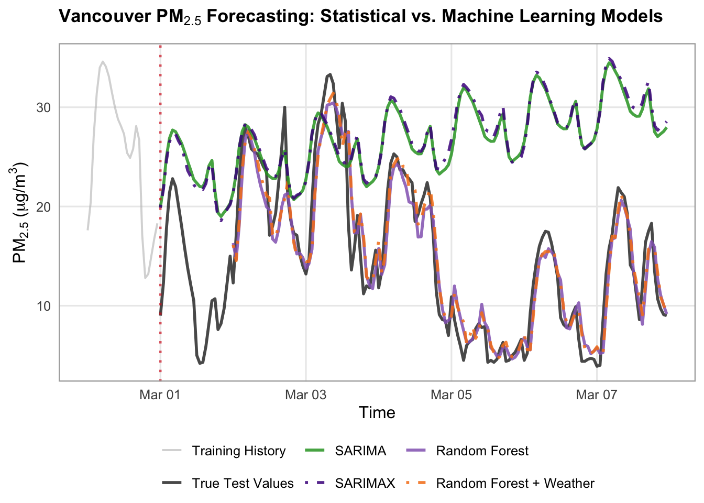
# Define models dictionary
forecasts = {
"SARIMA": sarima_preds,
"SARIMAX": sarimax_preds,
"Random Forest": rf_preds,
"Random Forest + Weather": rf_preds_weather
}
# Styles
model_styles = {
"SARIMA": {
"color": "#2ca02c", # green
"linestyle": "-",
"linewidth": 1.75,
"alpha": 0.85,
},
"SARIMAX": {
"color": "#4A148C", # blue
"linestyle": "-.",
"linewidth": 1.75,
"alpha": 0.85,
},
"Random Forest": {
"color": "#9467bd", # purple
"linestyle": "-",
"linewidth": 2,
"alpha": 0.85,
},
"Random Forest + Weather": {
"color": "#F57F17",
"linestyle": "-.",
"linewidth": 1.75,
"alpha": 1,
}
}
# Set up canvas with clean proportions
fig, ax = plt.subplots(figsize=(14, 5.5), dpi=100)
train_history_hours = 24
test_forecast_hours = 168
train_history = y_train.tail(train_history_hours)
true_test_subset = y_test.head(test_forecast_hours)
# Plot Training History subtly (lighter grey)
ax.plot(
train_history.index,
train_history.values,
label="Training History (Last 24h)",
color="gray",
linewidth=1.2,
alpha=0.6,
)
# Plot True Test Values as a bold, clean reference line
ax.plot(
true_test_subset.index,
true_test_subset.values,
label="True Test Values",
color="#222222",
linewidth=2,
alpha=0.8,
zorder=5,
)
# Loop and plot all models with reindexing to handle lag offsets smoothly
for label, pred_series in forecasts.items():
aligned_preds = pred_series.reindex(true_test_subset.index)
style = model_styles.get(label, {})
ax.plot(
true_test_subset.index,
aligned_preds,
label=label,
color=style.get("color"),
linestyle=style.get("linestyle", "-"),
linewidth=style.get("linewidth", 1.5),
alpha=style.get("alpha", 1.0),
)
# Vertical line separating train from test
ax.axvline(
x=true_test_subset.index[0],
color="#d62728",
linestyle=":",
linewidth=1.5,
alpha=0.7,
label="Forecast Start",
)
# 4. Formatting the layout
ax.set_title(
"PM₂.₅ Baseline Models: Training History & Test Forecast",
fontsize=16,
fontweight="bold",
)
ax.set_xlabel("Time", fontsize=16)
ax.set_ylabel(r"$\text{PM}_{2.5}$ ($\mu\text{g/m}^3$)", fontsize=16)
ax.tick_params(axis='x', labelsize=14)
ax.tick_params(axis='y', labelsize=14)
ax.grid(True, linestyle=":", alpha=0.6, color="darkgrey")
ax.legend(
loc="upper left",
frameon=True,
facecolor="white",
framealpha=0.95,
edgecolor="lightgrey",
fontsize=14,
)
fig.autofmt_xdate(rotation=45, ha="right")
fig.subplots_adjust(bottom=0.28, left=0.12, right=0.95, top=0.90)
plt.show()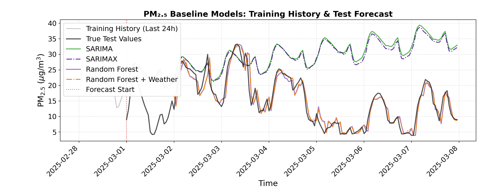
There is a slight improvement in RMSE and MAE with the addition of weather explanatory variables (2.49 to 2.45 and 1.80 to 1.75 respectively), but visually, we cannot see much difference between the two random forest predictions. This indicates that, while adding extra context may help a little, really it is the flexibility and power of the random forests that is responsible for our accurate predictions here.
Discussion
This case study set out to analyze and forecast hourly air quality (\(\text{PM}_{2.5}\)) in Vancouver, exploring how different modeling approaches handle complex environmental data. We began with simple baselines (e.g. mean and drift), then moved to classical statistical models like \(\text{ARIMA}(1, 1, 1)\) and automated SARIMA configurations, before ending off with a machine learning Random Forest Regressor with lagged features (e.g. \(t-1\) and \(t-24\)). Our findings revealed a clear hierarchy in performance: while classical statistical models provided a stable and interpretable foundation, the Random Forest model outperformed them all, achieving the lowest out-of-sample error metrics (an RMSE of 2.49 and an MAE of 1.80) and visually tracking true test values with good precision. We also tested adding external weather variables to our models, and observed a slight additional improvement in our results.
The Random Forest model’s success stems from its unique blend of ensemble learning and feature engineering, which allows it to capture complex, non-linear interactions and short-term momentum without being derailed by environmental noise. It excelled particularly at capturing sharp diurnal pollution spikes that simpler models tended to smooth out. However, this high predictive accuracy comes with a trade-off: unlike the transparent parameters of ARIMA, the random forest operates more as a “black box,” offering less insight into the exact mathematical weights of individual drivers, therefore limiting their interpretability.
Despite this limitation, this case study underscores the vital role of robust time-series modeling in environmental science. By accurately anticipating pollution dynamics, agencies and urban planners can gain actionable foresight to issue timely public health advisories, track localized emission trends, and design data-driven strategies for cleaner air.
Attribution
Data sourced from Open Meteo via API, available under the CC BY 4.0 data license. Open Meteo compiles data from the following sources: METEO FRANCE, Institut national de l’environnement industriel et des risques (Ineris), Aarhus University, Norwegian Meteorological Institute (MET Norway), Jülich Institut für Energie- und Klimaforschung (IEK), Institute of Environmental Protection – National Research Institute (IEP-NRI), Koninklijk Nederlands Meteorologisch Instituut (KNMI), Nederlandse Organisatie voor toegepast-natuurwetenschappelijk onderzoek (TNO), Swedish Meteorological and Hydrological Institute (SMHI), Finnish Meteorological Institute (FMI), Italian National Agency for New Technologies, Energy and Sustainable Economic Development (ENEA) and Barcelona Supercomputing Center (BSC) (2022): CAMS European air quality forecasts, ENSEMBLE data. Copernicus Atmosphere Monitoring Service (CAMS) Atmosphere Data Store (ADS).